Journée IA et algorithmes
2A — Sciences Po SGL — Mardi 29 avril 2025
Invalid Date
Les productions - dont ce support - de Datactivist sont librement réutilisables selon les termes de la licence Creative Commons 4.0 BY-SA.
N’hésitez pas à les réutiliser largement en mentionnant Datactivist et en partageant ce contenu dans les mêmes conditions.
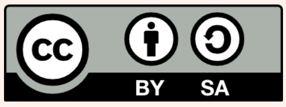Qui sommes-nous ?
Scop fondée en 2016 pour aider le secteur public à ouvrir ses données (loi Lemaire)
Laurane Coudriet
Consultante Design et Innovation
Loup Cellard
Sociologue, chercheur associé au médialab de Sciences Po paris
Qui sommes-nous ?
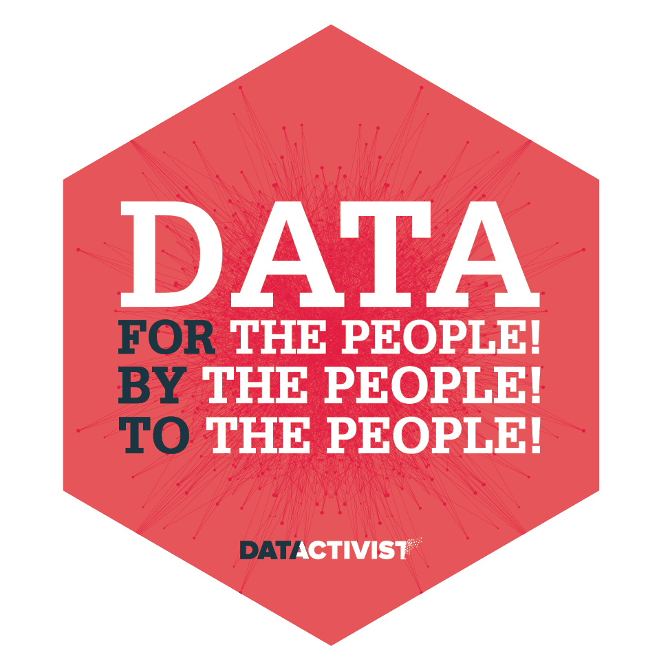
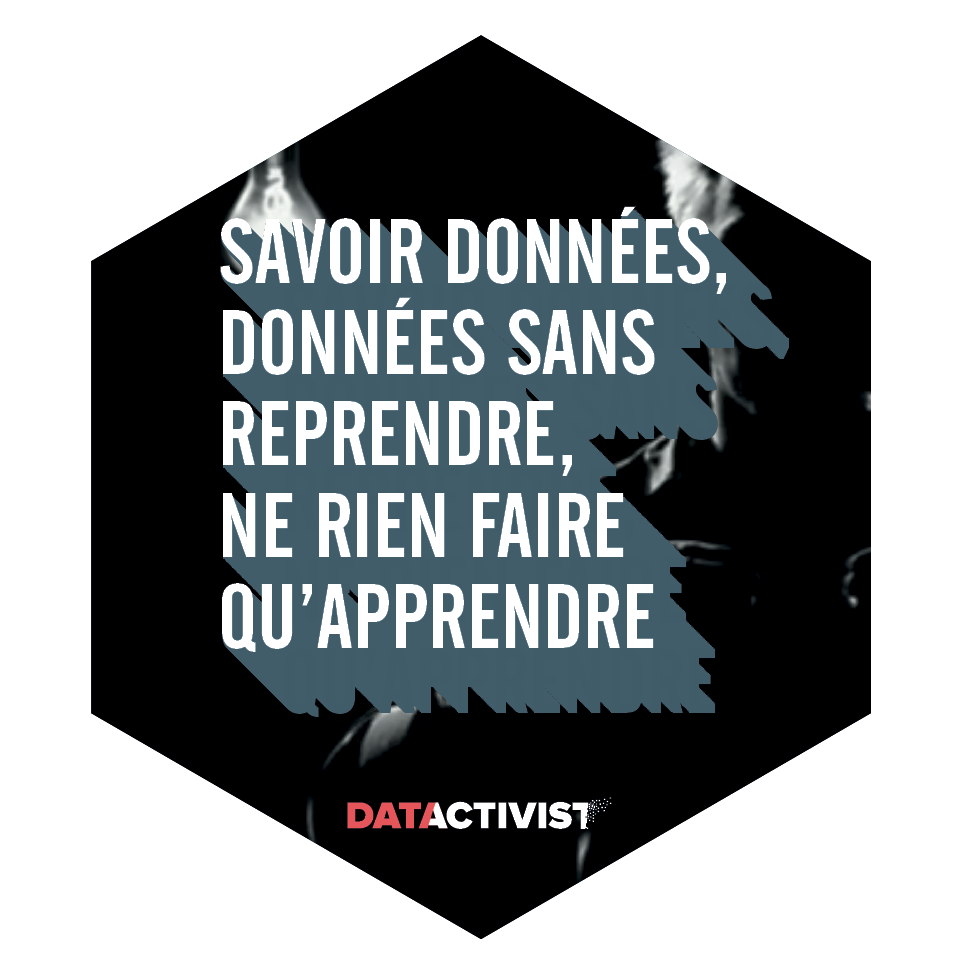
Datactivist : We open data, we make them useful
Notre mission : donner à toutes et tous le pouvoir de comprendre, d’agir pour plus de démocratie, de justice et de résilience. Se positionnant sur toutes les étapes du travail d’ouverture des données, Datactivist travaille tant avec les producteurs de données qu’avec les réutilisateurs et participe à l’appropriation des données par chacun. Nous appliquons nos propres valeurs tant en interne que dans nos relations avec nos clients et partenaires. Nous animons la communauté #TeamOpenData
Datactivist, une Société Coopérative et Participative
Chaque salarié(e) a vocation à devenir associé(e)
Une vingtaine de Salarié(e)s Associé(e)s
1 associé(e) = 1 voix
Les grandes décisions stratégiques sont votées en assemblée générale (AG) selon le principe 1 PERSONNE = 1 VOIX, quel que soit le capital détenu.
Chacun prend part aux décisions de façon égale
Les salarié(e)s mettent en commun leurs compétences et leurs savoir-faire pour progresser ensemble et faire durer l’entreprise. Les Scop sont les seules entreprises coopératives dont les membres associés sont majoritairement les salariés. Rendez-vous sur le site des SCOP ou regardez cette vidéo de 4 minutes pour tout savoir sur les SCOP et leur projet. www.youtube.com/user/lesscops
Datactivist : nos activités
Conseil sur les stratégies d’ouverture de données : nous aidons les organisations dans la conception et la mise en œuvre de leur stratégie d’ouverture de données.
Accompagnement dans la réutilisation de données ouvertes : nous aidons les organisations à utiliser les données au quotidien.
Formation sur la donnée : nous formons à la culture générale des données, nous enseignons les grands principes et bonnes pratiques de l’open data et nous introduisons à la data science.
Médiation de données : nous organisons des hackathons, des open data camps, des expéditions de données.
Développement d’outils : nous développons des outils et créons des méthodologies pour faciliter les étapes techniques tout au long du cycle de vie des données.
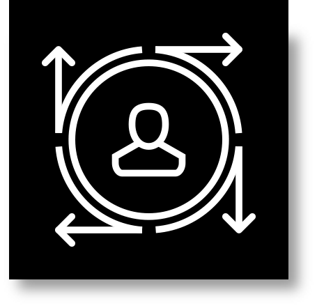
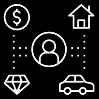
Création et animation de la plateforme #TeamOpenData
Interactive
Chaque jour, plusieurs sujets allant de la veille à l’emploi sont postés par les membres du forum.
Reconnue
Les personnes prenant part aux conversations sont des expertes et experts reconnus de la profession.
Une plateforme unique
TeamOpenData est un espace de dialogue rassemblant une communauté engagée.
=> https://teamopendata.org/
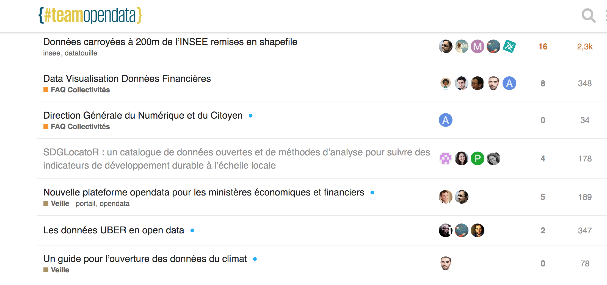Retrouvez nos contenus ouverts
=> https://open.datactivist.coop/
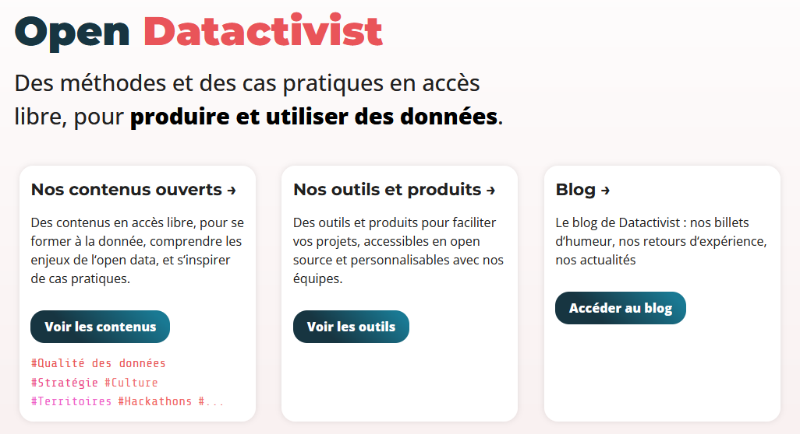Programme et objectifs
Programme de la journée
Matinée : Partie I sur les algorithmes 9h Introduction : c’est quoi les algorithmes ? Un exemple concret du quotidien pour faire un pas de côté Enjeux politiques des algorithmes utilisés par les administrations Activité 1 : débattons des indicateurs de l’index prof. égalité H-F Pause de 20 min, de 10h35 à 10h55 Activité 2 : Débattons des critères du score de risque de la CAF Déjeuner à 12h, reprise à 13h30
Après-midi : Partie II sur l’IA 13h30 Revenons sur quelques éléments & définitions IA & données L’IA est-elle politique ? Quelle IA pour quel usage ? Activité 3 : Découverte et exercices pratiques sur l’outil Compar:IA Pause de 20 min, de 15h à 15h20 Activité 4 : Débat autour des cartes “controverses” de la boîte noire de l’IA Conclusion et atterrissage de la journée
Objectifs de la journée
Notation collective : par groupe, 4 activités (2 le matin, 2 l’après-midi) chacune notée sur 5.
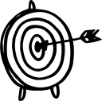PARTIE I - Algorithmes
Qu’évoque le mot algorithme pour vous ?
Petite recherche Google Images pour “Algorithme” :
Des connotations et imaginaires : code femme-cyborg (wtf!!!) mathématique obscure schéma, arbre de décision
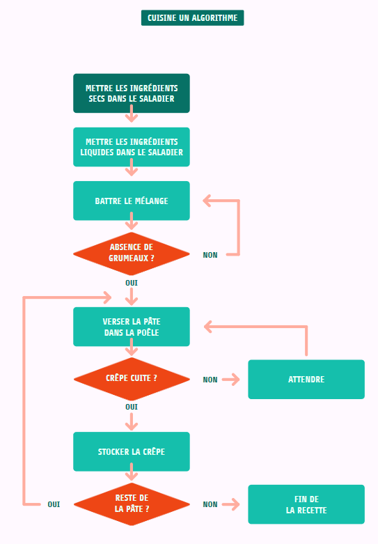
Différents types d’algorithmes
D’où vient l’utilisation des algorithmes ? besoin de structurer des procédures (de calcul), désir d’efficacité, besoin d’analyse de données, etc.
Des exemples : le PageRank du moteur de recherche Google qui détermine les pages de résultats pour une requête,
le Newsfeed qui détermine le contenu d’un fil d’actualités Facebook,
l’algorithme de tarification dynamique d’Uber qui fait varier les prix des courses en fonction de la demande
Un exemple concret du quotidien pour faire un pas de côté
Algorithme d’attribution des places en crèches
Étapes dans l’attribution des places en crèche :
1er rdv avec les parents : collecte de données (type et durée d’accueil, date d’entrée souhaitée, situation familiale et professionnelle, revenus, etc.)
Mémorisation et ordonnancement automatique des dossiers dans un logiciel + exportation d’une liste de demandes classées par date.
Étapes dans l’attribution des places en crèche :
- Le fichier Excel est modifié à la main pour ordonner les dossiers :
par ordre de priorité (priorité médicale, enfant, soutien des services sociaux, familles monoparentales, naissances multiples, parents étudiants, priorité médicale des parents),
par type de contrat (200h, 160h, …),
par âge (du moins au plus âgé),
puis par revenus (du moins au plus élevé).
- Le fichier Excel est rétroprojeté et discuté dans une commission composée de l’élu à la petite enfance, des directrices de crèches et de parents.
Étapes dans l’attribution des places en crèche :
Informations aux parents :
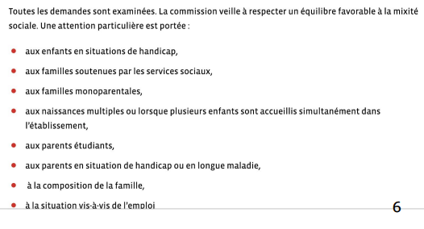Étapes dans l’attribution des places en crèche :
Une fiche bristol avec les étapes pour réaliser l’ordonnancement “à la main” sur Excel.
Un exemple d’Excel avec les dossiers ordonnés.
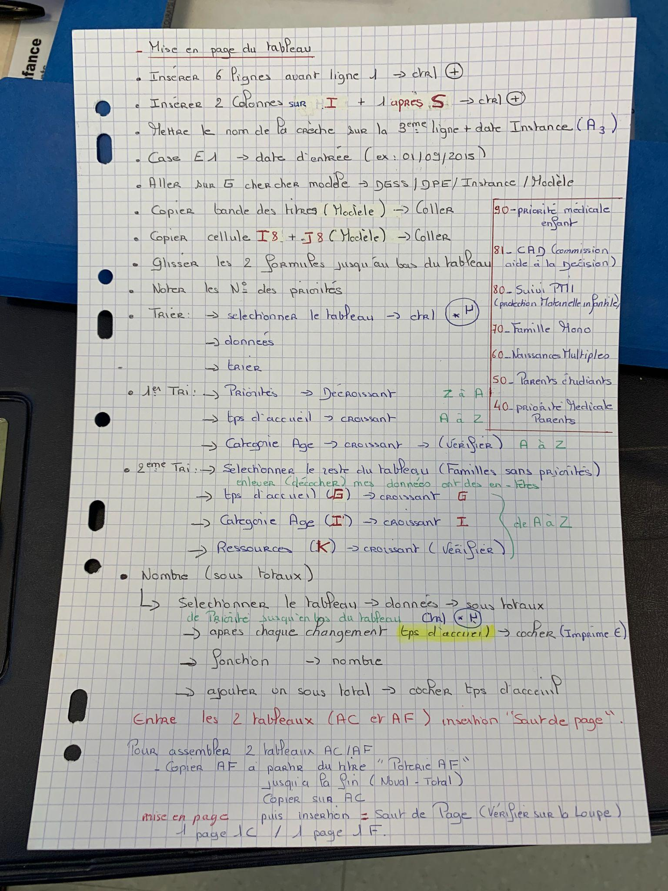
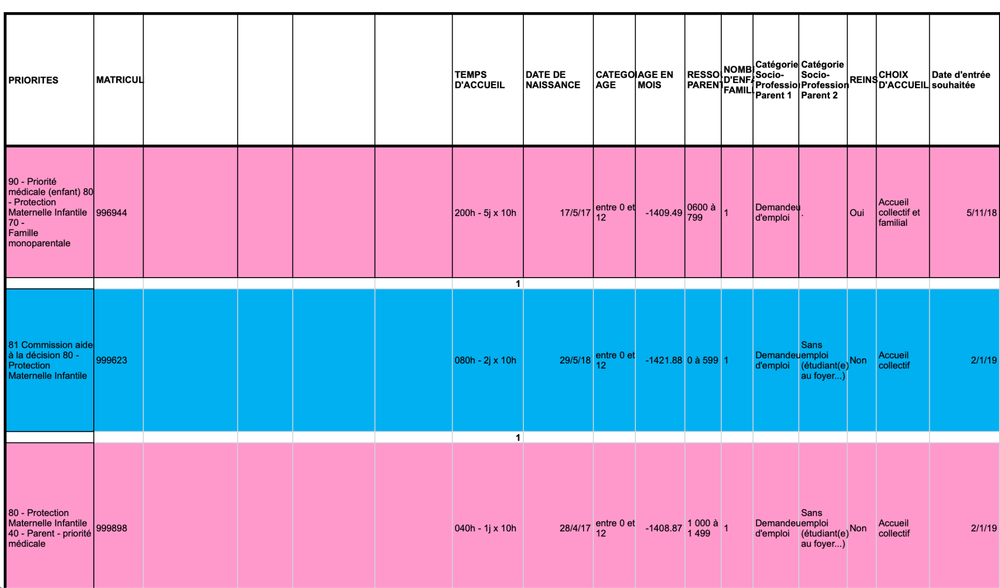
Que retenir de ce cas ?
revenir à la réalité de la bureaucratie : un algorithme simple utilisé par une administration (pas une IA
L’algorithme se manifeste par des critères pondérés qui correspondent à une politique sociale
Les algorithmes sont partout, alors nous sommes déjà témoins de leurs effets
Thèse : derrière les algorithmes, une politique des indicateurs.
Les critères/indicateurs/métriques/formules qui composent les politiques publiques sont les nœuds de passage entre :
la technique (ils sont conditionnés par un algorithme),
la politique (ils sont fixés par la loi),
les usages (les critères est la manière dont l’algo et le calcul sont rendus visibles).
Pour mieux critiquer les algorithmes : débattons des indicateurs
Si l’algorithme est un instrument d’une politique publique, les indicateurs sont les variables visibles que nous pouvons mettre en débat et essayer de transformer.
Étapes dans l’attribution des places en crèche :
Différents problèmes observés par mon collègue Simon Chignard (Etalab) :
manque de transparence pour les parents : pas de description fine de la pondération des critères, objectif de mixité peu clair, critère de gestion (durée d’inscription).
tri à la main : gros risque d’erreur,
sous utilisation du logiciel et des données collectés (algorithme peu informatisé),
Algorithme,
De quoi parle t-on ? {background-color=“#173541”}
Une multitude de manifestations/échelles
L’algorithme, une entité abstraite…. …mais avec une multitude de représentations où d’échelles à laquelle elle peut être saisie : schéma, arbre de décision, diagramme, données, code de programmation, logiciel bureautique, interface (web, mobile, ou embarqué…),
Pour aller plus loin : Matzner, T. (2022). Algorithms as complementary abstractions. New Media & Society, 0(0). https://doi.org/10.1177/14614448221078604
Définition légale
Def du Conseil d’Etat/CNIL :
“Description d’une suite finie et non ambigüe d’étapes ou d’instructions permettant d’obtenir un résultat à partir d’éléments fournis en entrée.”
Source: Rapport Conseil d’état «Accompagner l’ubérisation…», sept 2017 . Rapport CNIL, «Garder la main…», dec 2017. = dans ce sens l’algorithme n’est pas spécifiquement numérique. = c’est un système socio-technique
C’est quoi un algorithme ?
Des données en entrées - > des étapes - > un résultat à la fin
Source : Cuisine un algorithme — DATAlirelaDATA
Les enjeux
Les usages des algos publics
Source : Guide : Expliquer les algorithmes, Etalab
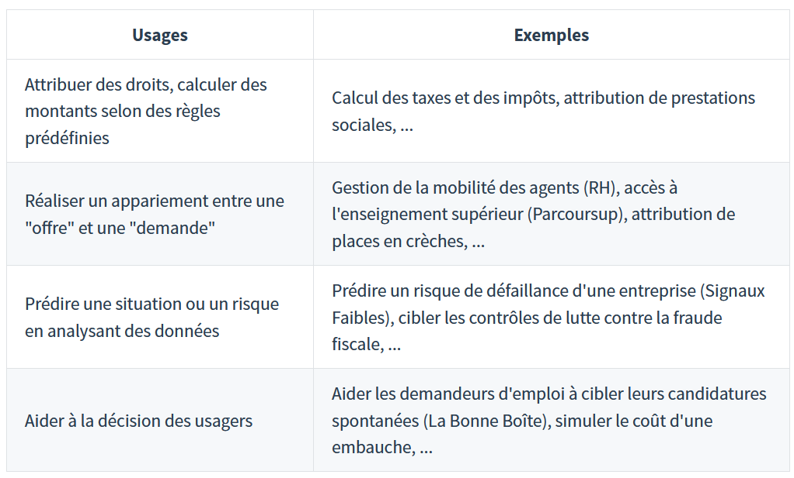Spécificités des algorithmes du secteur public
Ils sont censés opérer au service de l’intérêt général,
Ils servent souvent à exécuter le droit, à (faire) appliquer la loi,
Ils sont bien souvent incontournables, c’est à dire qu’il n’existe pas d’alternatives pour les usagers.
Source : Guide des Algorithmes Publics, Etalab.
Problèmes des algorithmes du secteur public :
erreurs entre la traduction de la loi en code, et dans le code lui-même,
algorithmes opaques alors même qu’ils impactent la vie des administrés,
renforcement des discriminations,
automatisation/déplacement de compétences des agents publics et perte de légitimité,
délégation des missions vers le privé (qui est un fournisseur d’algorithme au public).
Contexte : quelques scandales, une prise de conscience, mais peu d’actions.
Sur la période 2016-2021 :
APB/Parcoursup, Affelnet Impôt sur le revenu, taxe d’habitation CAF
Une multitude d’autres sujets, peu investigués :
attribution des places en crèches, calcul de l’index égalité H-F, Pôle Emploi, Ameli, (et bien d’autres…)
Activité 1 : débattons des indicateurs de l’index prof. égalité H-F
Activités : mise en débat des critères de l’index d’égalité H-F
“Problème : l’écart salarial entre les femmes et les hommes au sein des entreprises françaises est chiffré actuellement à 15% en moyenne. Solution : Le Ministère du Travail a publié en janvier 2018 un décret qui oblige les entreprises françaises à calculer et transmettre l’index d’égalité professionnelle.”
Source légale : loi 2018-771 du 5 sept 2018 pour la liberté de choisir son avenir professionnel (+ décret n°2019-15 du 9 Janvier 2019)
Activités : mise en débat des critères de l’index d’égalité H-F
En France, en 2024, l’Insee publiait un écart salarial annuel dans le secteur privé de 23,5 %.
Ces écarts moyens de rémunération sont également fluctuants selon le nombre d’enfants, écart de 6,1%, pour une femme sans enfant, jusqu’à 29,5 %, si trois enfants ou plus.
Source légale : Insee : https://www.insee.fr/fr/statistiques/7766515. Pour une discussion : https://www.editions-legislatives.fr/actualite/la-directive-europeenne-sur-la-transparence-des-salaires-un-levier-decisif-vers-legalite-salariale-f/
L’index prof. H-F : une note sur 100 et 5 indicateurs
Index publié tous les ans avant le 1er Mars.
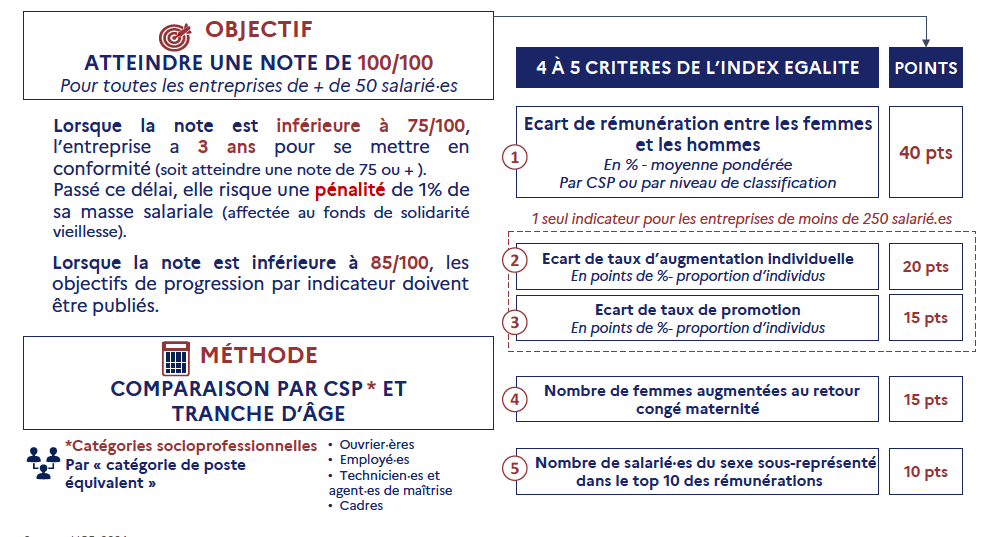Détail de la mise en œuvre de la réforme
Les entreprises doivent communiquer les résultats, avec le détail des différents indicateurs, à leur Comité social et économique (CSE) ainsi qu’à l’inspection du travail (Dreets en région). L’obligation concerne les entreprises d’au moins 1000 salariés depuis le 1er mars 2019 ; celles d’au moins 250 salariés, depuis le 1er septembre 2019 ; celles d’au moins 50 salariés au 1er mars 2020.
Une note sur 100 et 5 indicateurs
Déclaration en ligne : https://egapro.travail.gouv.fr (ou à l’aide d’un modèle Excel fourni)
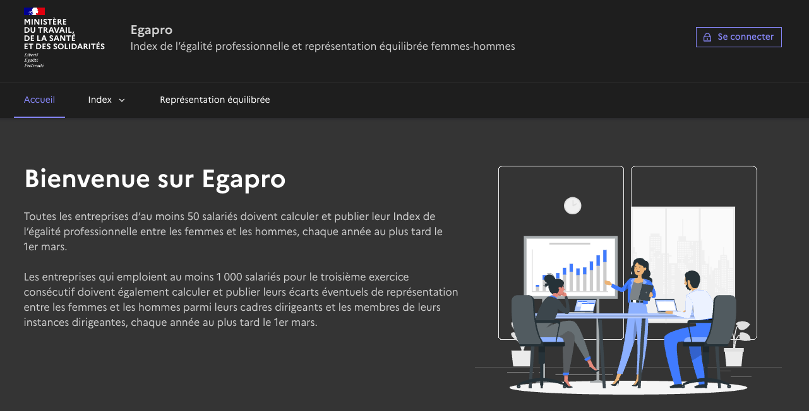Index public en ligne pour les entreprises de 250+ salariés : https://egapro.travail.gouv.fr/consulter-index
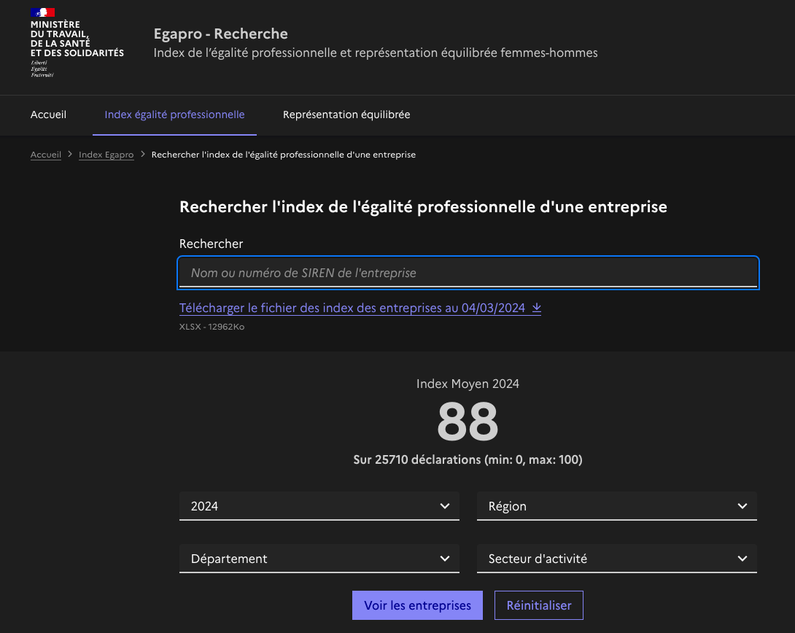Avantages de l’index d’après le Haut Conseil à l’égalité
Source :
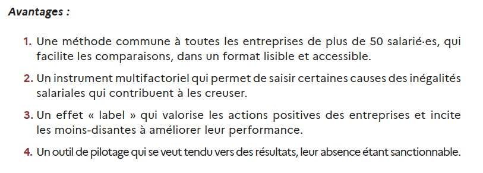
Activités : mise en débat des critères de l’index d’égalité H-F
Une multiplicité d’entrées pour enquêter sur le sujet :
comprendre l’origine de la loi, son objectif et son évolution,
jouer avec l’index public et la manière dont les entreprises communiquent à ce propos,
visualiser les données ouvertes, et le modèle de données de la BDD,
analyser le détail des indicateurs et leurs poids dans la note globale,
analyser les modes de calcul des indicateurs (de la rémunération, vers l’écart en pourcentage, vers les points sur 100) à partir de la documentation en ligne et du FAQ,
analyser les demandes citoyennes de transparence des codes sources et données,
Pour aujourd’hui, focus sur le détail des indicateurs et leurs poids dans la note globale.
Grâce à la lecture d’un article, nous allons comprendre les critiques formulées à l’encontre des 5 indicateurs de l’index.
L’objectif de l’activité est de lister les limites et critiques que l’on peut faire aux indicateurs qui constituent l’index d’égalité professionnelle H-F.
Il s’agit d’interroger le lien entre la construction d’indicateurs chiffrés et les objectifs d’une politique de réduction des inégalités.
Chaque groupe de travail (8 personnes) doit d’abord lire l’article (10 minutes) et puis il faut se séparer le travail pour traiter toutes les critiques (il y en a 6).
→L’article à lire est dans le dossier “Ressources pour la journée”
Définir des rôles
2 portes paroles
Vous êtes tous rédacteurs (vous rédigez les réponses sur les critiques que vous traitez)
Les porte-paroles doivent s’assurer que les 6 critiques vont être traitées par le groupe (séparer vous les tâches).

Rappel des indicateurs
Source : MAYMO, V, & MURAT, G (2023). Outil 71. L’index d’égalité professionnelle entre les femmes et les hommes. La boîte à outils du Développement durable et de la RSE 82 outils clés en main. Dunod, pp. 164-165.
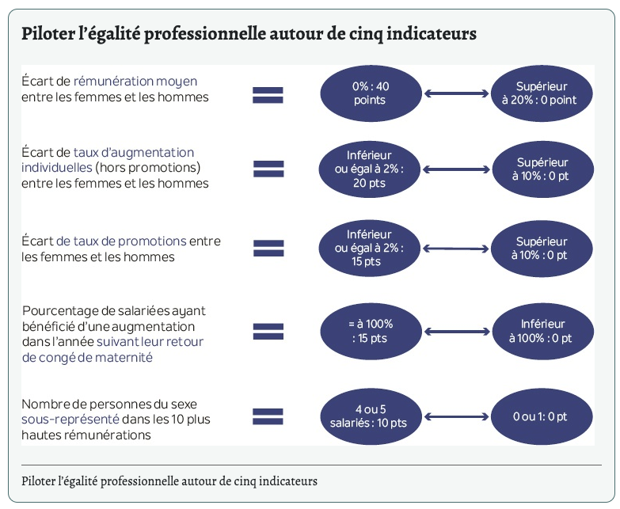Critiques de l’index d’après le Haut Conseil à l’égalité
à propos du 1er indicateur : écart de rémunération : 40p
débat sur la classification large des différentes types d’employés (calcul sur les CSP) vs. un autre mode de de calcul = risque d’exclusion d’effectif et problème de comparaison entre entreprises (+7 nouveaux sous-indicateurs de la Directive européenne).
débat sur le seuil de pertinence, permet de camoufler les écarts,
les données BDESE donnent des notes plus basses (rapport IPP) par rapport à ce qui est déclaré dans l’index,
risque classique d’erreurs de déclaration.
Source :
Critiques de l’index d’après le Haut Conseil à l’égalité
à propos du 1er indicateur : écart de rémunération : 40p
Source :
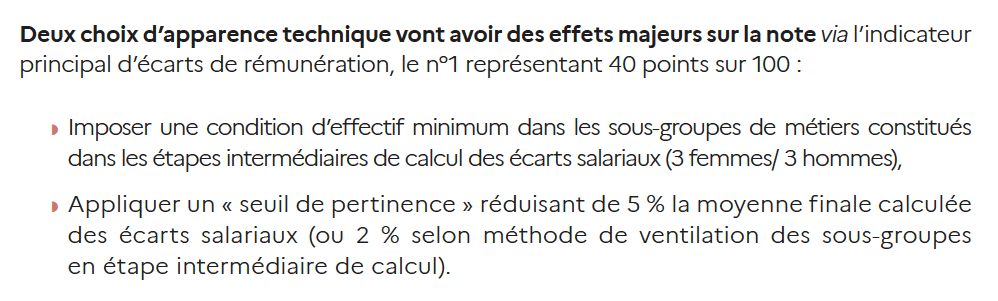
Critiques de l’index d’après le Haut Conseil à l’égalité
à propos des indicateurs 2 et 3 : écart d’augmentation 20p + écart de répartition des promotions : 15p .
interprétation de ce qui est entendu par “promotion”, dans la loi elle est purement administrative.
pas de prise en compte des montants d’augmentations ou la qualité de la promotion (invisibilisation des traitements différenciés entre H et F, il suffit d’1€ d’augmentation)
interdépendance statistique entre indicateur 1 et 2-3, Ex: embauche de plus de femmes une année = hausse indicateur 1, baisses indicateur 2 et 3.
Source :
Critiques de l’index d’après le Haut Conseil à l’égalité
indicateur 4 : on donne des bons points aux entreprises qui ne font que respecter l’obligation d’augmentation des femmes après un congés mat’.
indicateur 5 : long à changer, dépend bcp du recrutement, grande variabilité du score (il suffit d’un départ ou d’une promotion).
Source :
Critiques de l’index d’après le Haut Conseil à l’égalité
Source :
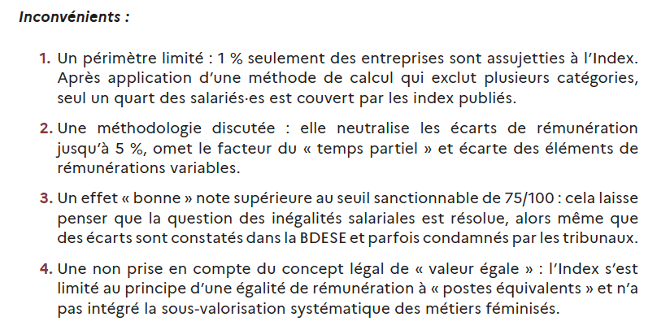
Évaluation de l’index d’égalité H-F
“Pour mémoire, l’index égalité professionnelle engageait les entreprises à la transparence et aux résultats. Or, au 1er mars 2025, seules 80 % des entreprises concernées ont publié leur note. 6 % des répondants, soit 1 717 entreprises ont obtenu 0 sur le critère congé maternité, les mettant en infraction vis-à-vis de la loi de 2006. Mais, depuis 2019, 101 pénalités concernant l’index ont été prises, soit moins de 10 % des mises en demeure. Les moyens de contrôle restent limités à date. Alors, si prévoir de corriger et de réparer les situations déviantes constatées, est un plus, obtenir leur mise en application avec une vraie efficacité est une autre affaire.”
Source : https://www.editions-legislatives.fr/actualite/la-directive-europeenne-sur-la-transparence-des-salaires-un-levier-decisif-vers-legalite-salariale-f/
Pistes de réformes de l’index d’égalité H-F
L’index va se transformer au vu de la directive européenne 2023/970 du 10 mai 2023 (transposé en France dès la mi-2025). Le haut conseil à l’égalité à travailler sur des recommandations et une concertation. Ce qui fait consensus :
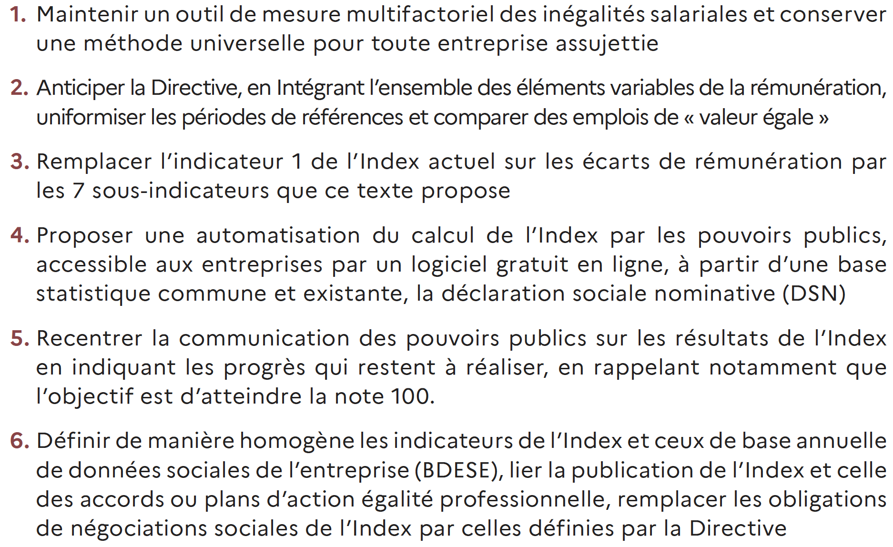Pistes de réformes de l’index d’égalité H-F
Ce qui fait encore débat mais qui est majoritairement poussé à être adopté :
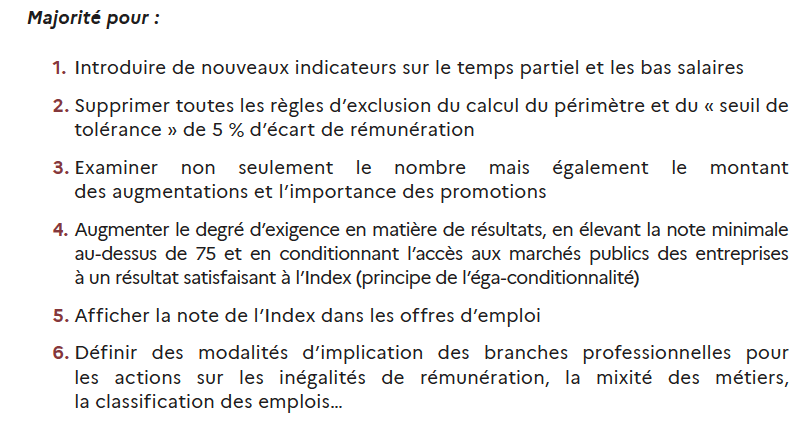Grands enseignements à propos de l’index d’égalité H-F
Prétendue objectivité des chiffres et justesse de la mesure (scientificité qui cache la réalité ?),
Indicateurs, standardisation et communication (problème de commensuration),
pas seulement un algorithme mais des données, indicateurs, formulaires en ligne, des administrations…bref, une multitude d’acteurs et pas qu’une question d’informatique,
Argument : derrière les algorithmes, une politique des indicateurs.
Les critères/indicateurs/métriques qui composent le score sont les nœuds de passage entre :
la technique (ils sont conditionnés par un algorithme),
la politique (ils sont fixés par la loi),
les usages (c’est la manière dont l’algo et le calcul sont rendus visibles).
Le débat démocratique sur l’usage des algorithmes n’est pas à mener nécessairement à partir du code mais à partir des indicateurs/mesures/scores et de leurs utilisations.
Il faut donc être sensible aux écarts entre leurs définitions dans la loi, la mise en oeuvre technique de cette loi, leurs utilités et efficacité.
Argument : politique du chiffre et volonté de performativité
Le score vise à rendre l’égalité concrète, visible. Inciter à faire mieux (pointer les bons et mauvais élèves) et accompagner sa performance (mais avec un risque performatif que le critère inexact et limité deviennent la cible)
Source: audition du sociologue Vincent-Arnaud Chappe, sept 2023, rapport HCE, p27.
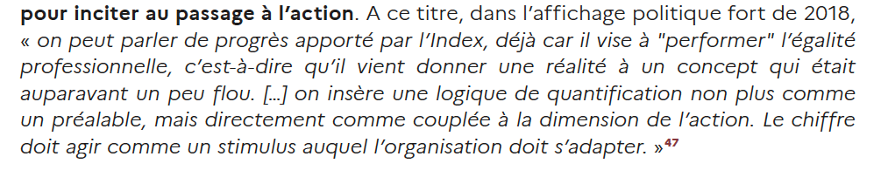Pause ☕ (20 min)
Activité 2 : Débattons des critères du score de risque de la CAF
Devinette
Après avoir suspendu vos allocations pendant plusieurs mois, votre Caisse d’Allocation Familiale vous notifie par procès verbal de l’arrêt de vos droits (ex. RSA ou APL) pour cause de fraude. Vous cherchez à contester cette décision, du moins à savoir comment cette décision a été prise.
Quelles démarches entreprenez-vous ?
Vos démarches
Auprès de l’administration demande d’information informer sur le traitement des données à caractère personnel (article 15 du RGPD) motiver la décision administrative défavorable (en droit et en fait)
recours gracieux revoir la décision
recours administratif préalable Commission de recours amiable
Auprès de la juridiction administrative recours contentieux (référé et recours au fond)
Source : tweet de Nicolas Kayser-Bril, membre d’Algorithm Watch
Source : Tribune de l’appel lancé par Changer de Cap en 2022 https://changerdecap.net/petition-caf/
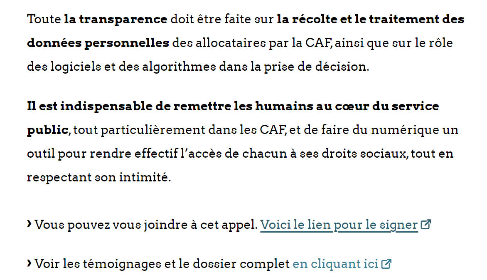Un recours en Conseil d’État a été déposé par 15 organisations en octobre 2024 pour réclamer son abrogation.
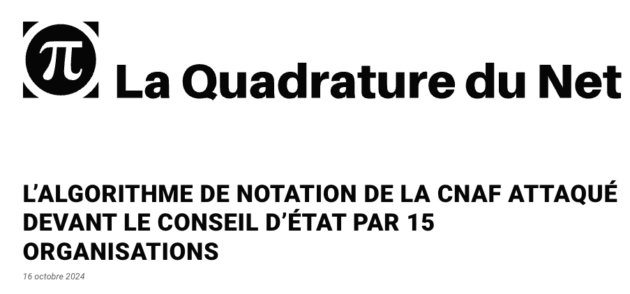Score de risque ? késaco ?
Dans les CAF, un algorithme de notation attribue des scores de risques à tous les allocataires, quelles que soient les prestations versées (aide au logement, allocations familiales, prime d’activité, RSA, Allocation adulte handicapé…).
Plus son score de risques est élevé, plus un allocataire a de chances de subir un contrôle, car il est davantage soupçonné d’avoir commis des erreurs ou une fraude.
La notation s’effectue selon des critères (ou « variables ») choisis par la CNAF, de même que leur pondération, parmi les centaines de données que détiennent les CAF sur chacun de leurs allocataires.
L’étude de l’algorithme de notation 2014 a démontré que celui-ci cible délibérément les plus vulnérables.
Algorithme “data mining données entrantes”
Score de risque mensuel. Le score est compris entre 0 et 1. Un score de 0.3 signifie que l’allocataire a 30% de chance de voir son dossier générer un indu.
3 types de contrôles : automatique, sur pièce, sur place.
Ce score est ensuite utilisé pour prioriser les contrôles, et notamment les contrôles sur place, dont il est la principale méthode de déclenchement.
Chaque mois, les contrôleur·euses reçoivent une liste de dossiers à contrôler, qui correspond aux dossiers gérés par la Caf ayant reçu le plus haut score de risque.
Si les contrôleurs et contrôleuses peuvent exceptionnellement choisir de ne pas contrôler un dossier, elles et ils sont généralement tenus de contrôler les dossiers indiqués sur la liste.
Algorithme “data mining données entrantes”
Résumé sur les variables :
En effet, le modèle de 2010 comprend 37 variables (6 ont été masquées par la CNAF lors de la communication du code source du traitement algorithmique) ; le modèle de 2014, quant à lui, exploite 35 variables (3 ont été masquées par la CNAF). Le modèle 2018 en contient 41 (aucune n’a été communiquée aux requérantes).
Score de risque ? késaco ?
Profil type (d’après La Quadrature du Net) :
Une famille « aisée » aux revenus stables et élevés (0,08),
Une famille « modeste » dont les deux parents gagnent le SMIC (0,3),
Un parent isolé gagnant aussi le SMIC (0,45),
Une famille dont les deux parents sont bénéficiaires des minima sociaux (0,58),
Une famille dont un des parents est travailleur·se en situation de handicap : pour ce profil, nous simulons le score de la personne bénéficiant de l’AAH trimestrialisée (0,55).
Objectifs de l’activité :
Les trois situations familiales et professionnelles présentées dans l’atelier contiennent chacune trois critères qui font augmenter le score de risques.
Les critères sont des variables retenues parmi les 94 de la version 2014 de l’algorithme, la seule qu’aient pu obtenir les associations et les médias.
Selon vous, quels sont ces trois critères ?
Lien vers le formulaire sur l’activité CAF : https://forms.fillout.com/t/1wdqNtytb6us
Consignes à suivre pour cette activité :
Un porte parole du groupe est rédacteur, iel chargé de rédiger les réponses dans l’outil (une seule validation du formulaire par groupe)
Le deuxième porte-parole chronomètre pour ne passer que 5 minutes sur chaque situation (15 minutes en tout)
Conseil : Une personne est chargé de lire lentement et à haute voix la description de chaque famille, les autres écoutent et tentent d’identifier les critères importants.
Vous relisez tous ensemble et débattez entre vous pour identifier les trois critères par famille,
Le rédacteur rédige les réponses dans le formulaire.
Corrections : Situation 1
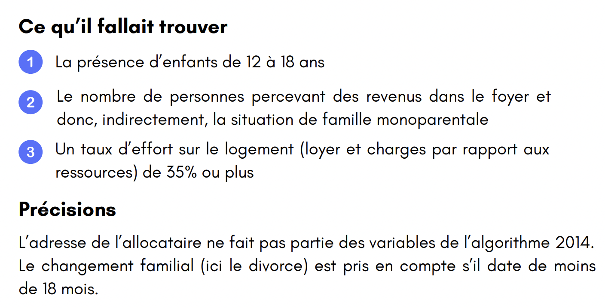Corrections : Situation 1
“seule avec ses enfants” : mère célibataire, famille monoparentale Ce qui est pris en compte : le fait qu’il y ait un seul salaire, pas le fait que la personne soit célibataire On parle de discrimination indirecte L’algorithme cible ainsi les familles monoparentales qui sont à 82% constituées de femmes seules avec enfant.
Corrections : Situation 2
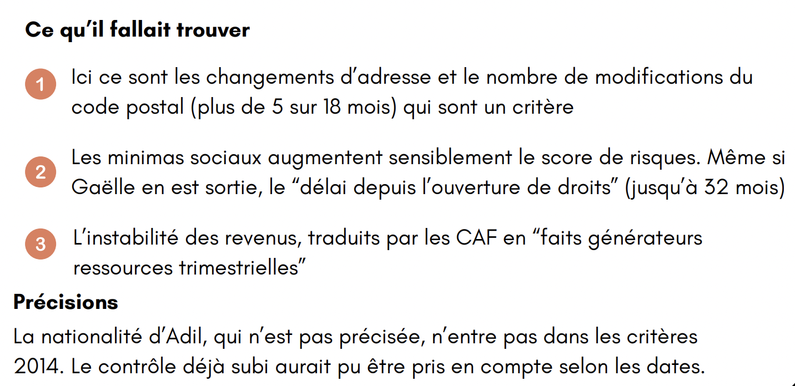Corrections : Situation 2
Revenus irrégulier -> Ici il y a le fait que la CAF prend en compte le nombre de mois travaillés au niveau du couple. Donc si les deux ne travaillent pas 12 mois par an, le score sera moins bon que pour un couple qui a travaillé les 12 mois. L’instabilité des revenus, traduits par les CAF en “faits générateurs ressources trimestrielles”.
Corrections : Situation 2
Pièges : Pour les CAF, les droits du foyer (allocataire et conjoints) sont impactés par les séjours à l’étranger si ceux-ci excèdent 92 jours par an. Ici, Adil et Gaëlle ne partent pas plus de deux mois, maximum. Point d’attention : Attention, il n’est ici question que du fonctionnement d’un algorithme, cela ne signifie pas que les CAF ne soient pas attentives aux voyages réguliers.
Corrections : Situation 3
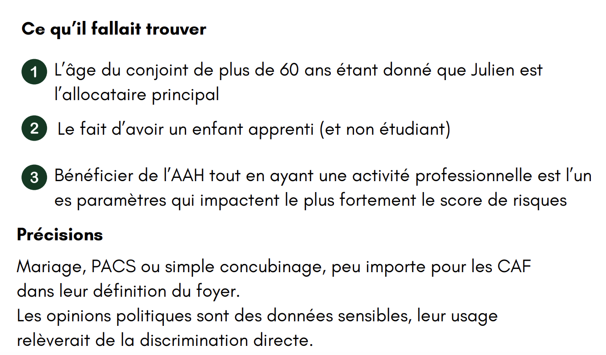Corrections : Situation 3
Remarque : Même si Julien a obtenu la garde exclusive de son enfant, il ne peut prétendre à l’allocation parent isolé dès lors qu’il s’est remis en couple, et quel que soit le statut. La charge de l’enfant près de fait sur le conjoint.
Pause déjeuner 🍝 12h-13h3O
PARTIE II - IA
Revenons sur quelques éléments & définitions !
Avant tout, nous allons revoir quelques termes…
Intelligence Artificielle Apprentissage automatique Modèle d’IA Générative Modèle de langue IA conversationnelle Prompt Impact énergétique Modèle ouvert
Intelligence Artificielle (définition très générale)
Champ d’étude en informatique visant à « reproduire des comportements liés aux humains, tels que le raisonnement, la planification et la créativité. »
Source : CNIL.
Apprentissage automatique
Champ d’étude de l’intelligence artificielle qui vise à donner aux machines la capacité d’« apprendre » à partir de données. Ces données nourrissent des modèles mathématiques.
Source : CNIL.
Modèle d’IA
Un modèle, en sciences des données, est une réduction de la réalité sous une forme mathématique. Le modèle d’IA est la construction mathématique générant une déduction ou une prédiction à partir de données d’entrée.
Source : CNIL.
Modèle d’IA Générative
Systèmes capables de créer des contenus (texte, code informatique, images, musique, audio, vidéos, etc.) à partir de données d’entraînement. Ex. DALL·E (créé par OpenAI) qui génère des images
Source : CNIL.
Modèle de langue
Modèle génératif qui calcule les probabilités d’ enchaînements de segments de texte. Ils servent à générer automatiquement du texte. Quand ils sont grands, on parle de modèles de langage de grande taille ou « Large Language Models » (LLM). Ex. ChatGPT, Claude, Mistral
Source : CNIL.
IA conversationnelle
Modèle spécialisé dans le dialogue en langage naturel avec un humain, qui est capable notamment de répondre à des questions ou de déclencher l’exécution de tâches. Ex. un chatbot de service client
Source : Ministère de l’enseignement supérieur et de la recherche
Prompt
Consigne, instruction ou requête donnée par un utilisateur à un modèle génératif qui décrit la tâche à accomplir.
Source : Ministère de l’enseignement supérieur et de la recherche
Paramètre
Variables apprises par un modèle au cours de son entraînement qui déterminent ses réponses. Plus le nombre de paramètres est important, plus le modèle est capable d’effectuer des tâches complexes.
Source : Compar:IA
Impact énergétique
Mesure de l’électricité consommée par le modèle pour traiter une requête et générer la réponse correspondante. Plus un modèle est grand, plus il faut d’énergie pour produire la réponse à la requête.
Source : Compar:IA
Impact environmental
Émissions de dioxyde de carbone produites par l’énergie utilisée pour faire fonctionner le modèle. Dépend du type d’énergie utilisé dans chaque pays. La consommation énergétique n’est pas la seule source d’impact environnemental de l’IA générative.
Source : Compar:IA
Modèle ouvert
Modèle dont les composants internes sont librement accessibles et réutilisables : paramètres mathématiques du modèle, données ayant servi à l’entraînement, code des algorithmes, documentation des choix techniques. Ex. un modèle ouvert d’IA générative est Stable Diffusion. C’est un modèle d’images open-source. Comme Dall-e, mais ici le code source est disponible publiquement, on peut donc créer ses propres variantes, modifier et l’améliorer.
Source : CNIL
Derrière l’IA : des données
Définition d’une donnée
Les données sont généralement comprises comme étant la matière première produite dans l’abstraction du monde en catégories, mesures et autres formes de représentation - nombres, caractères, symboles, images, sons, ondes électromagnétiques - qui constituent les fondations sur lesquelles l’information et le savoir sont créés.
Rob Kitchin, The Data Revolution: Big Data, Open Data, Data Infrastructures and Their Consequences - 2014
Cet ouvrage propose une analyse synthétique et véritablement critique du « big data », de l’« open data » et du paysage émergent des données.
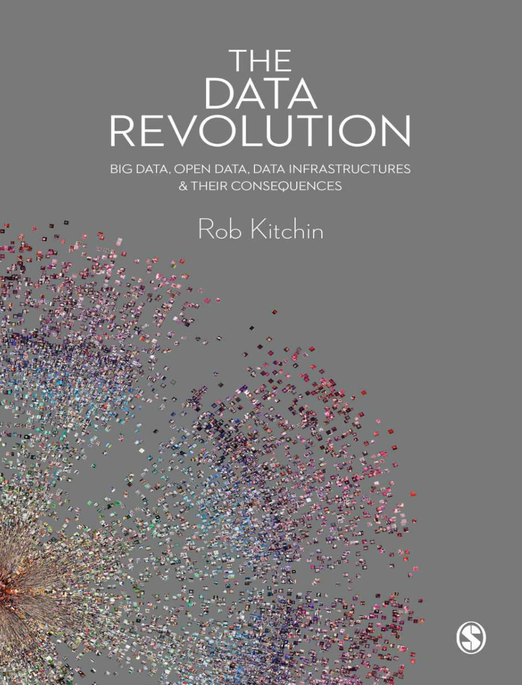Derrière l’IA : des données
☞ La donnée est une unité individuelle d’information. ☞ Le jeu de données est un ensemble organisé de données collectées d’une manière spécifique. Un jeu de données est donc une collection d’informations. ☞ L’algorithme, lui, est une série d’instructions logiques qui est utilisée pour traiter ces données.
Les données, une fausse nouveauté ?
Les tablettes sumériennes (-3200) Mésopotamie : comptabiliser les arbres et les têtes de bétails. On a bien affaire ici à des données.
La carte perforée (1884) 1e mémoires de masse utilisées dans l’informatique au 19e siècle. Herman Hollerith, accélère la production de statistiques pour les gouvernements. 2 ans plus tard, il crée IBM le géant de l’informatique.
Les bases de données relationnelles, (1970) Des données inscrites dans des tables et reliées entre elles par des identifiants uniques pour traiter de plus grands volumes, développer des données plus complexes et éviter des erreurs de saisie.
Le tableur (1979) VIsicalc, (« Visible Calculator ») démocratise les données en proposant le système de la feuille de calcul sur laquelle les données peuvent être directement manipulées. C’est l’ancêtre d’Excel, LibreOffice…
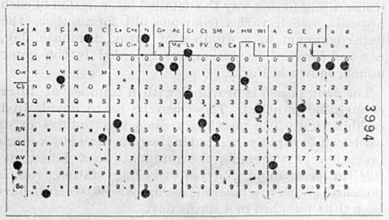
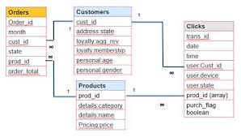
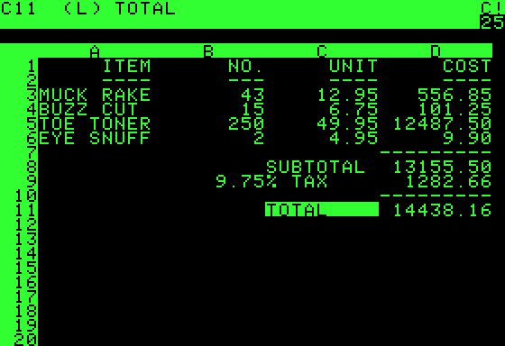
La mise en données du monde : la datafication
Aujourd’hui, presque tous nos aspects de la vie sont numérisés.
Avez-vous des exemples dans votre quotidien ?

La mise en données du monde : la datafication
Aujourd’hui, presque tous nos aspects de la vie sont numérisés.
De + en + de capteurs partout autour et sur nous : les téléphones (altimètre, battements de coeur, distance, GPS…) les montres connectées (fréquence cardiaque, GPS, sommeil…) les voitures (GPS, vitesse, freinage, horaires et jours de déplacements, préférences utilisateurs…) les jouets (GPS, voix, image) les compteurs connectés (consommation, heures et jours) les frigos, les brosses à dent, les pèse-personne…
La mise en données du monde : la datafication
→ On tend vers une ”Datafication” du monde. Le processus toujours plus important de mise en données du monde.
→ Cette massification des données, c’est ce que les Anglo-Saxons désignent sous le terme big data.
Source: Formation de formateurs caféIA, Mednum, 2025.
[ i ]
[ A ]
Intelligence
Artificielle
Terme ambigu qui peut renvoyer aussi bien à une notion de compétence, de nombre de connaissances, que de performance.
Intelligence ≠ Conscience
Produit par l’être humain et non par la nature
Pourquoi tout le monde parle d’IA ?
Le terme IA - pour intelligence artificielle - est confusant. De nombreuses voix de la recherche ont toujours soulevé qu’il n’y avait pas plus mal choisi que ce terme. Il n’y a pas d’intelligence dans l’intelligence artificielle. Dans son essai Design sous artifice : la création au risque du machine learning, le designer et chercheur Anthony Masure explique pourquoi il privilégie le terme de machine learning.
Pourquoi tout le monde parle d’IA ?
Elle n’est pas artificielle non plus : ces programmes ne peuvent marcher que parce qu’ils s’en- traînent sur des données créées par des humains, (Midjourney aspire des millions d’images créées par les êtres humains) et il faut en plus que des humains améliorent ces programmes.
L’IA n’est pas intelligente, ce n’est pas une intelligence humaine. Elle fonctionne “en continu, sans pause, sans repos, sans peur et sans psychose, donc tout le contraire d’un cerveau humain/vivant”.
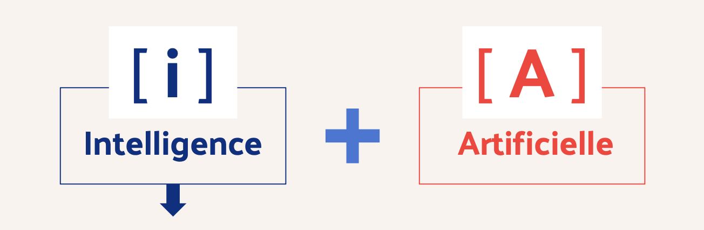Pourquoi tout le monde parle d’IA ?
→Il y a trop de problèmes conceptuels majeurs dans cette expression d’intelligence artificielle. Aurélie Jean, scientifique spécialisée dans les algorithmes et la modélisation numérique, va aussi dans ce sens. Il est important - aujourd’hui plus que jamais - de comprendre comment les algorithmes sont créés, comment ils fonctionnent, ce qu’ils sont, mais aussi - et surtout - ce qu’ils ne sont pas.
Comment ça marche l’IA ? (version très simplifiée)
L’Intelligence Artificielle, c’est chercher à faire faire à un ordinateur des fonctions typiques de la cognition.
Source: Formation de formateurs caféIA, Mednum, 2025.
Anthropomorphisme ?
La notion d’intelligence artificielle relève d’un anthropomorphisme
L’IA est associée aux idées de consciences des machines : pourtant ces idées n’ont pas lieu d’être.
Les peurs autour de l’intelligence artificielle tiennent beaucoup à l’imaginaire qui a été construit autour de cette discipline.
“L’anthropomorphisme est l’attribution de caractéristiques du comportement ou de la morphologie humaine à d’autres entités comme des dieux, des animaux, des objets, des phénomènes, des idées ou des êtres d’un autre monde le cas échéant” (Définition Wikipédia)
Source: Formation de formateurs caféIA, Mednum, 2025.
Les composantes de l’IA : les données
Donnée
Groupe de données
Corpus de données
Une donnée = une information
Une donnée est ce qui sert de point de départ à un raisonnement visant à résoudre un problème.
Les données sont sélectionnées selon la nature du problème à résoudre.
Corpus de données = ensemble structuré, homogénéisé de données
La qualité d’un corpus est évaluable selon plusieurs critères (validité et nombre de données, équité …), afin de minimiser l’apparition de biais dans les réponses proposées par l’algorithme
Pas d’IA sans données de qualité
Il faut des données de qualité, corrigées, mises à jour.
coûts de nettoyage et de pré-traitement 80% du temps d’un projet d’IA = préparation des données sinon = mauvais résultats en sortie risque de biais et de discriminations impact dans la vie réelle Concept Garbage In, Garbage Out (GIGO) →Même l’algorithme le plus sophistiqué qui soit, produira des résultats inexacts et potentiellement biaisés si les données d’entrée sur lesquelles il s’entraîne sont inexactes.
Dans son documentaire Coded Bias : Algorithmes et discrimination datant de 2022, la cinéaste Shalini Kantayya enquête sur les biais algorithmiques dévoilés par la découverte de failles dans la reconnaissance faciale par Joy Buolamwini. Le problème est que tout le monde à des préjugés inconscients et les gens intègrent les leurs dans la technologie. Si nous avons des jeux de données biaisées pour entraîner ces systèmes, les résultats seront aussi biaisés
L’IA, un vieux concept qui a fait peau neuve
©Adam Nadel/AP Images
2022 : ChatGPT
1956 : conférence de Dartmouth
1997 : Deeper Blue
2009 : ImageNet
Base de données d’images annotées à destination des travaux de recherche en vision par ordinateur, présentée la première fois lors d’une conférence internationale en Floride en 2009. Elle a servi de base pour un concours annuel très prisé de traitement d’images jusqu’en 2017.
Agent conversationnel développé par OpenAI qui utiliser les LLM pour générer du texte. Sa gratuité et son accès en ligne créent un développement de l’usage exponentiel.
Atelier scientifique qui réunit 20 chercheurs organisé par par Marvin Minsky et John McCarthy
C’est lors de cette conférence qu’apparaît pour la première fois le terme “intelligence artificielle”.
En 1996, le champion du monde d’échecs Gary Kasparov bat l’ordinateur DeepBlue d’IBM.
En 1997, pour la première fois, un ordinateur bat un humain aux échecs : Kasparov perd ses matchs contre Deeper Blue.
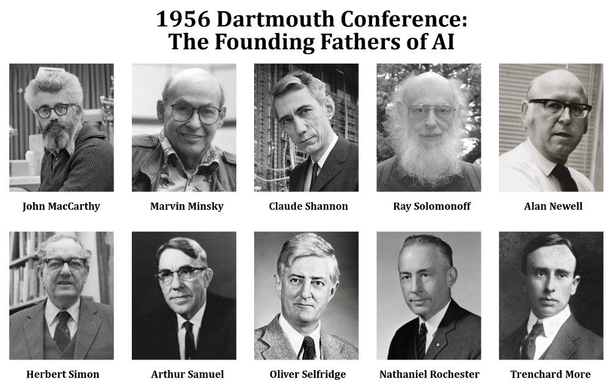
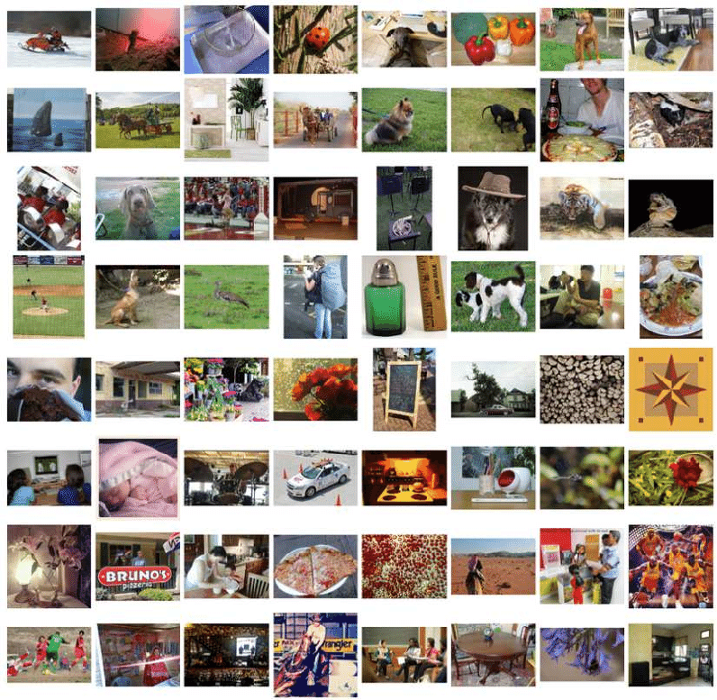
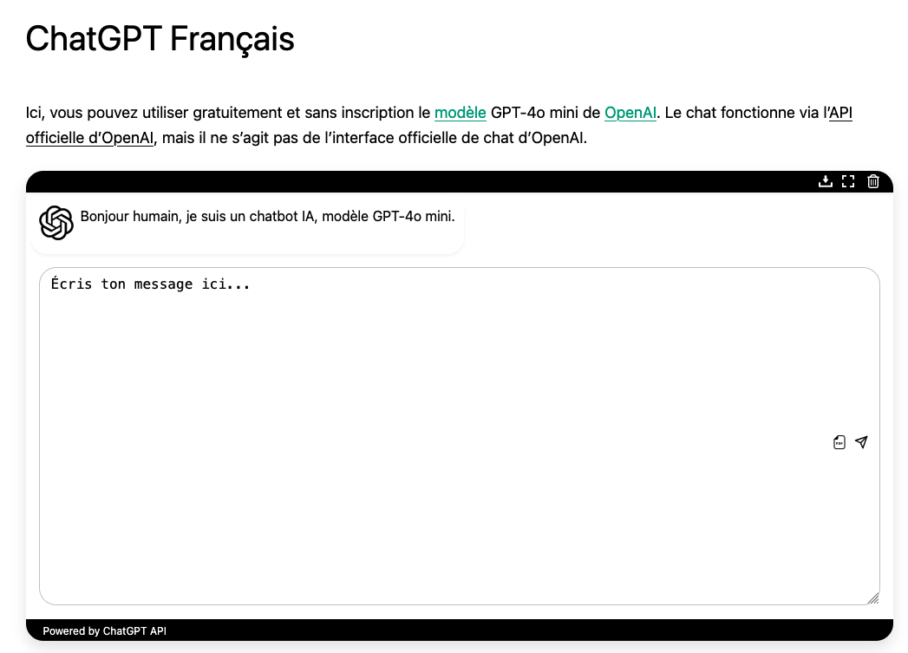
1948 Alan Turing publie Intelligent Machinery
1950 Alan Turing propose le principe du test de Turing 1956 McCarthy crée le terme d’intelligence artificielle
1994 Les voitures autonomes de Mercedes-Benz conduisent sur l’A1 1997 Deep Blue défait Kasparov aux échecs
2022 création de ChatGPT
1965 ELIZA, le 1er robot conversationnel 1966 DENDRAL, le 1er système expert 1968 2001, l’Odyssée de l’espace
2002 Commercialisation du Roomba
2012 Émergence du deep learning pour la reconnaissance d’image 2014 Création du modèle précurseur de Dall-E, Midjourney, etc. 2015 Création d’OpenAI 2017 Création du modèle précurseur de ChatGPT, Albert, etc.
Source : Immersif IA, Erasme, Datactivist.
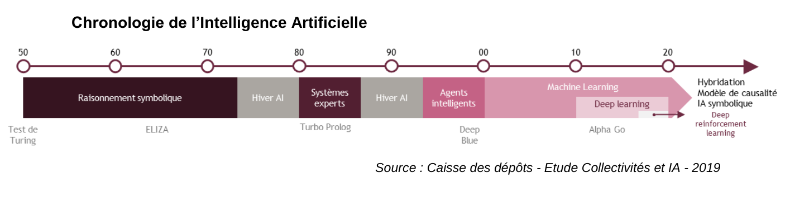
Distinction LLM, IA générative, machine learning, deep learning…
IA génératives (ChatGPT, Gemini, Midjourney…) & LLM (Mistral, Claude, BERT…)
Computer vision
NLP
© Maëlle Fouquenet + Bouliech CC-BY-SA (source : Wikimedia Commons).
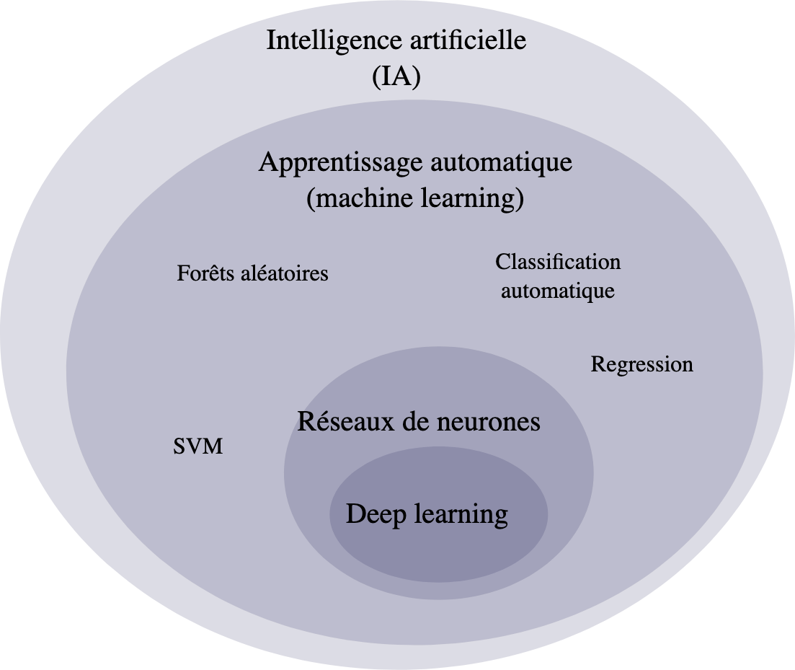Source: Formation de formateurs caféIA, Mednum, 2025.
Les composantes de l’IA : les algorithmes
Donnée d’entrée
A
B
Algorithme
Utilisation d’un algorithme
Un algorithme est une suite d’opérations permettant de résoudre un type de problème donné.
exemples: algorithme non numérique : recette de cuisine algorithme numérique : tri de chiffres par ordre de grandeur
séquence d’instruction étapes à travers lesquelles la donnée va passer
condition question à laquelle on peut répondre oui/non
boucle (associée à une ou plusieurs conditions) faire durer ou répéter une opération
Les IA sont partout autour de nous

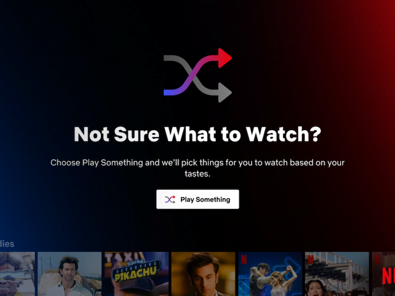
Les IA sont partout autour de nous
Les IA ont été récemment popularisées par l’émergence et la démocratisation des IA générative comme chatGPT.
Mais elles font partie de notre quotidien depuis bien longtemps !
Reconnaissance faciale
Déverrouillage smartphone
Filtres photos (Snapchat, TikTok, Instagram …)
Paiement en ligne
Simplification des processus de paiements
Détection des fraudes
Naviguer
Applications de navigation (Google Map, Apple Maps, Mappy, Waze, …)
Systèmes de recommandations
Publications sur les réseaux sociaux, Plateformes de streaming audio ou vidéo, Publicités …
Prévisions météo
GraphCast (Google DeepMind) …
Correcteurs orthographiques
Logiciel de corrections grammaticales et orthographiques
Chatbots
Support client pour répondre aux questions récurrentes
Assistants vocaux
Pour demander des tâches “simples” Assistant Google, Siri (Apple), …
Niveleur musical
Contrôle du volume sonore et de l’équilibrage de musiques
…
Source : 10 Helpful Everyday Examples of Artificial Intelligence
L’IA est-elle politique ?
Le(s)quel(s) de ces domaines politiques sont aujourd’hui du ressort potentiel de l’IA (dans les pays démocratiques) ? La régulation énergétique en temps réel et prédictive
L’appui stratégique dans la connaissance des pénuries et risques (terres rares, climat…)
La surveillance et la prévention policière
La prise de décision et les opérations militaires
La pédagogie électorale
L’aide à la décision judiciaire
Source : Immersif IA, Erasme, Datactivist.
L’IA est-elle politique ?
Le(s)quel(s) de ces domaines politiques sont aujourd’hui du ressort potentiel de l’IA (dans les pays démocratiques) ? La régulation énergétique en temps réel et prédictive
L’appui stratégique dans la connaissance des pénuries et risques (terres rares, climat…)
La surveillance et la prévention policière
La prise de décision et les opérations militaires
La pédagogie électorale
L’aide à la décision judiciaire
Source : Immersif IA, Erasme, Datactivist.
Bases documentaires La RAG (génération augmentée de récupération)
Exemple concret : recherche et synthétisation d’informations dans des textes de lois, délibérations, …
On peut utiliser des méthodes de recherche sémantique qu’on applique à une base documentaire (celle de la collectivité) qui a été vectorisée, c’est-à-dire que le texte a été transformé en représentation numérique.
Cela permet ensuite de faire des rapprochements par similarité avec la question posée à l’assistant.
Ces éléments similaires sont ensuite traités par un LLM pour les remettre en format texte compréhensible et répondre à la connaissance.
La RAG apporte de la précision et de la contextualisation à une réponse uniquement basée sur un LLM. Elle permet de réduire les risques d’hallucinations dans les réponses des LLM.
Source : Guide la génération augmentée par récupération (RAG), Direction Générale des Entreprises 2024
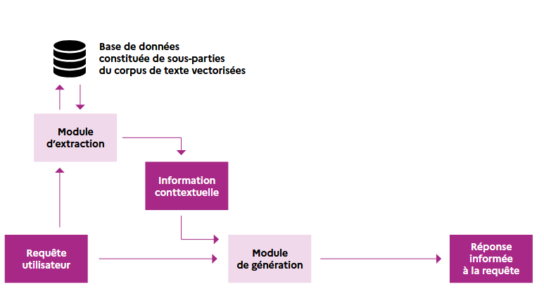Source: Formation de formateurs caféIA, Mednum, 2025.
Quelle IA pour quel usage ? - Créer du contenu
Arbre de liens (régulièrement mis à jour par Stéphanie DUMAS)
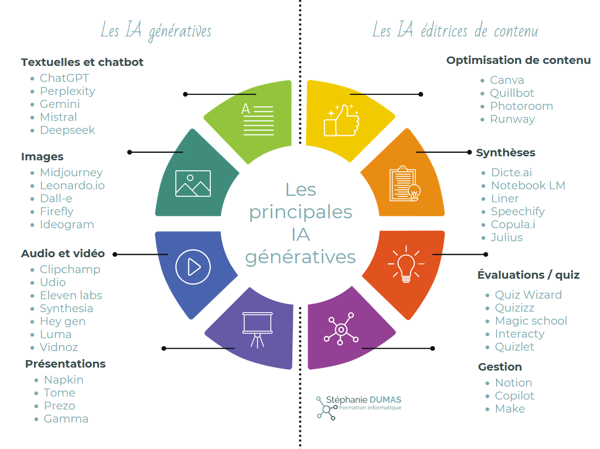L’IA dans les collectivités
Source : Baromètre sur la data dans les territoires (Observatoire Data Publica)
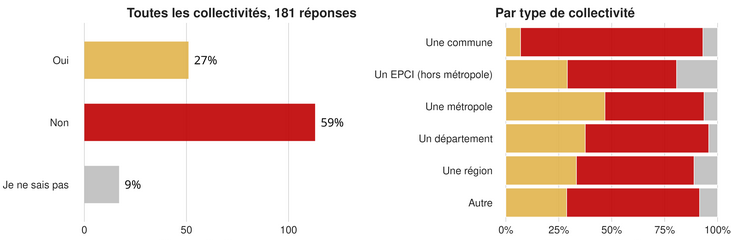L’IA dans les collectivités
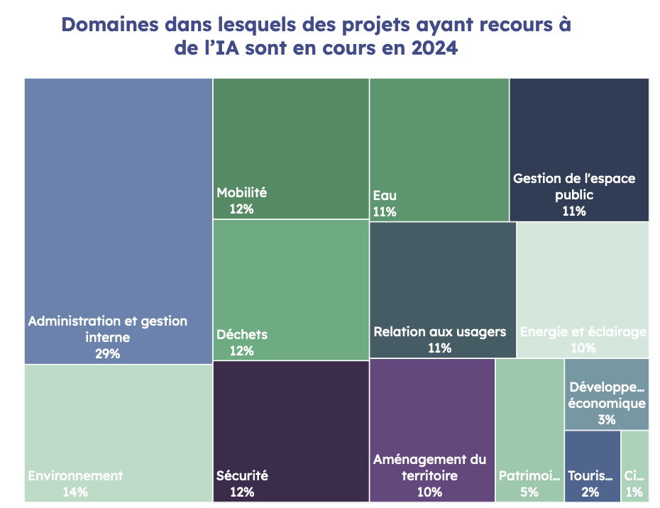
L’IA dans les collectivités
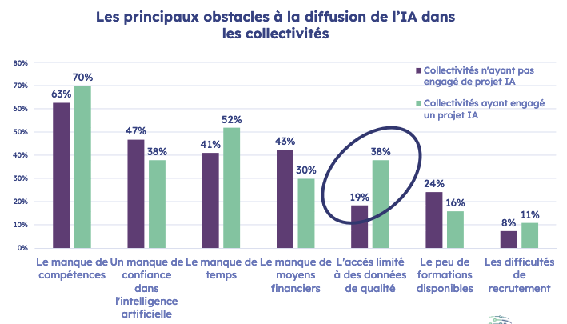
Les risques encadrés par l’IA Act
L’IA Act (ou en français, Loi sur l’Intelligence Artificielle) est la première grande loi européenne qui encadre l’usage de l’intelligence artificielle. C’est une réglementation adoptée par l’Union européenne en 2024.
Son but principal : Protéger les citoyens contre les risques liés à certaines IA Encourager l’innovation sans empêcher les avancées technologiques, Créer un cadre clair pour que tout le monde (startups, géants de la tech, utilisateurs) sache ce qui est autorisé ou interdit.
Les risques encadrés par l’IA Act
Les risques inacceptables (haut de la pyramide) 1. Manipulation et tromperie préjudiciables fondées sur l’IA 2. Exploitation préjudiciable des vulnérabilités fondée sur l’IA 3. Notation sociale 4. Évaluation ou prédiction du risque d’infraction pénale individuelle 5. Scraping non ciblé d’Internet ou de systèmes de vidéosurveillance pour créer ou développer des bases de données de reconnaissance faciale 6. Reconnaissance des émotions sur les lieux de travail et dans les établissements d’enseignement 7. Catégorisation biométrique pour déduire certaines caractéristiques protégées 8. Identification biométrique à distance en temps réel à des fins répressives dans des espaces accessibles au public
Les systèmes d’IA comportant ces risques sont interdits
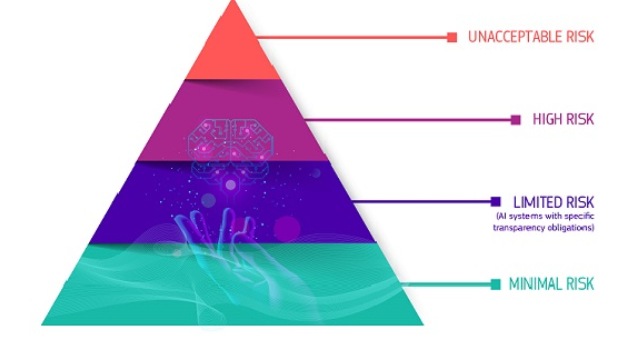Les risques encadrés par l’IA Act
Comment l’IA Act fonctionne ? Il classe les IA selon leur niveau de risque :
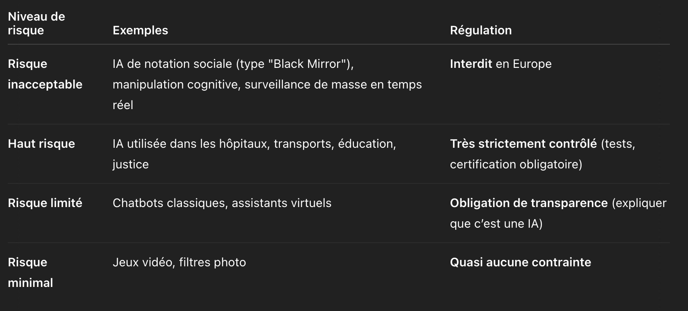Les risques encadrés par l’IA Act
Risque élevé C’est les “cas d’utilisation de l’IA susceptibles de présenter des risques graves pour la santé, la sécurité ou les droits fondamentaux”, en voici quelques-uns : SIA utilisés dans les établissements d’enseignement (l’accès à l’éducation et le déroulement de la vie professionnelle d’une personne) SIA utilisés pour l’identification biométrique à distance et la reconnaissance des émotions SIA utilisées dans l’administration de la justice et les processus démocratiques Les SIA pour l’emploi et la gestion des travailleurs (par exemple, logiciel de tri de CV pour le recrutement
Les obligations Les organisations qui développent, importent et commercialisent ces solutions doivent mettre en place des obligations (notamment) : mise en place d’un système de gestion des risques journalisation de l’activité (traçabilité des résultats) un audit des données d’apprentissage (les données ne présentent pas de biais préjudiciables) tenir à jour une documentation technique mesure appropriées de contrôle humain
Les risques encadrés par l’IA Act
Nécessité de transparence L’IA Act soumet des systèmes d’IA à des obligations de transparence spécifiques, notamment en cas de risque manifeste de manipulation. Exemples : recours à des chatbots ou à la génération de contenu artificiel.
A noter que tous les autres SIA sont dits ‘à risque minimal’ et ne sont soumis à aucune obligation légale supplémentaire.
Les obligations Transparence : les utilisateurs doivent savoir qu’ils interagissent avec une machine. Les acteurs publics doivent mettre en oeuvre la transparence liée à leur mission (publication des documents administratifs, codes sources, etc…)
Où sont les données et les IA ? → Dans des data centers
Cécile Diguet et Fanny Lopez. Territoires numériques et transition énergétique : les limites de la croissance. Working Paper. N°04/2019. Sciences Po. Cities and Digital Technology Chair.
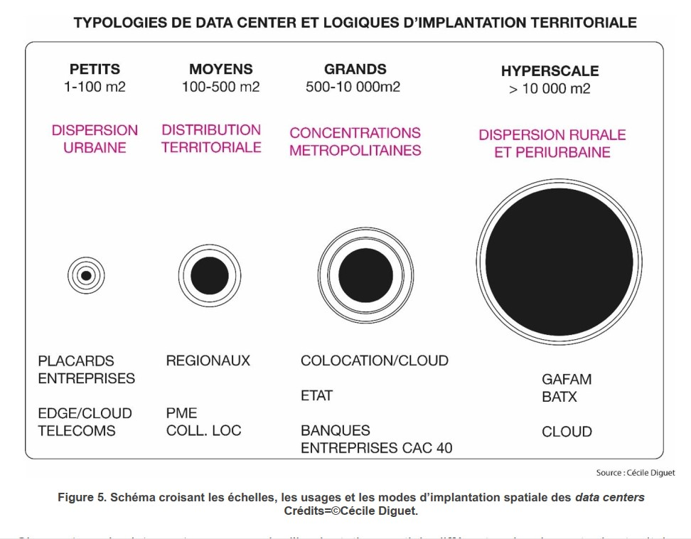De multiples implications environnementales de l’IA
En amont : des minerais aux puces de calculs Extraction, transports et gestion des déchets, de minerais utilisation d’eau pour laver les minerais, puis pollution par rejets, gaz fluorés pour construction de puces, destruction des habitats,
Lors de la construction du modèle :
Lors entrainement du modèle : énergie (décarbonné, nucléaire, pétrole) + eau pour refroidissement, stockage des grands volumes de données,
Lors de l’usage : inférence du modèle (calcul), stockage des grands volumes de données
Quel lien entre IA et climat ?
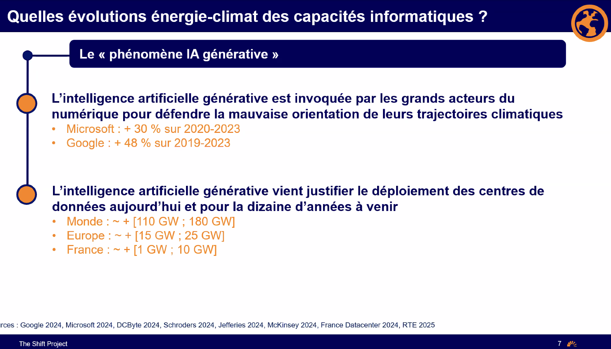
Le phénomène de l’IA Gen.
Sources : The Shift Project 2025.
LE PROMPT ENGINEERING
Construire son prompt
Utiliser les bonnes tournures de phrases
Aller du prompt vers le processus
Attribuez un rôle aux IA (par exemple “tu es un recruteur avec 20 ans d’expérience”)
Utilisez des bibliothèques de prompt
Pas besoin d’être poli avec l’IA, donc pas besoin d’ajouter des phrases comme “s’il vous plaît”, “merci”, “je voudrais”, etc., allez directement au but.
Permettez au modèle de préciser les détails et les exigences dont vous avez besoin en vous posant des questions jusqu’à ce qu’il ait assez d’informations pour fournir le résultat nécessaire
Ajoutez à votre prompt la phrase suivante “Assure-toi que ta réponse est impartiale et ne repose pas sur des stéréotypes”.
Lorsque vous avez besoin de clarté ou d’une compréhension plus profonde d’un sujet, d’une idée ou de toute information, demandez-le
Enrichissez la chaîne de pensée… en ajoutant encore plus d’exemples !
Intégrez les phrases suivantes : “Ta tâche est” et “Tu dois”.
Pour la syntaxe de votre prompt, commencez par “##Instruction##”, suivi soit par “###Exemple###” soit par “###Question###” si pertinent. Par la suite, présentez votre contenu. Utilisez un ou plusieurs sauts de ligne pour séparer les instructions, les exemples, les questions, le contexte et les données d’entrée.
Intégrez le public ciblé dans le prompt, par exemple, le public est un expert dans le domaine.
Répétez les mots importants plusieurs fois dans un prompt.
Employez des tournures de phrases affirmatives, ‘fait x’ plutôt que ‘ne fait pas y’.
Utilisez la phrase “Répond de manière naturelle et humaine” dans vos prompts.
Intégrez des exemples dans votre prompt.
Décomposez les tâches complexes en une séquence de prompts plus simples (principe de la conversation interactive ou encore, prompting itératif)
Utilisez des amorces de sortie en terminant votre prompt par le début de la réponse anticipée.
Utilisez des mots initiateurs comme “pense étape par étape”.
Et donc ?
Oui les IA arrivent dans nos quotidiens, y compris professionnels
… mais les compétences métiers sont nécessaires pour bien s’en servir Les compétences métiers désignent l’ensemble des savoir-faire, connaissances spécifiques, pratiques et expériences directement liés à l’exercice d’un métier ou d’une profession)
Et donc ?
Oui les IA arrivent dans nos quotidiens, y compris professionnels
… mais les compétences métiers sont nécessaires pour bien s’en servir Les compétences métiers désignent l’ensemble des savoir-faire, connaissances spécifiques, pratiques et expériences directement liés à l’exercice d’un métier ou d’une profession)
… il est impératif de connaître le sujet/les documents qu’on souhaite exploiter avec une IA Donc, même si des outils d’IA peuvent assister les travailleurs, il reste indispensable d’avoir une solide maîtrise du métier lui-même — c’est-à-dire comprendre les règles, les méthodes, les enjeux spécifiques du domaine concerné.
et avoir des données de qualité est essentiel.
Découverte de l’outil Compar:IA
Découvrons ensemble l’IA générative
ChatGPT, Mistral, Gemini, Claude ? Peut-être avez-vous déjà expérimenté ces outils ? Ou pas ? Nous vous proposons de tester des IA génératives dans un outil proposé par le Ministère de la Culture pour comparer les IA. C’est Compar:IA, un outil gratuit, sans inscription, qui nous permettra d’introduire les notions essentielles.
Compar:IA?
Le comparateur compar:IA est un outil proposé par le ministère de la Culture pour :
Améliorer la qualité des modèles de langage conversationnels sur les usages francophones avec des données sur leurs préférences
Faciliter l’accès aux IA génératives et encourager l’esprit critique des utilisateurs en aidant l’utilisateur à exercer un choix avisé entre différents modèles.
Comment ça marche ?
→ il y a 31 modèles d’IA générative proposés par une dizaine d’entreprises qui sont utilisés sur Compar:IA
Compar:IA - Bref historique de l’outil
Contexte de création
Le ministère de la Culture souhaitait proposer un outil permettant de sensibiliser ses agents et les professionnels du secteur aux enjeux de l’IA, de manière concrète et accessible. L’idée était de créer un projet pédagogique et interactif, permettant à chacun de découvrir les différents types de modèles d’intelligence artificielle à travers des cas d’usage réels.
Compar:IA - Bref historique de l’outil
Objectifs pédagogiques
L’objectif principal de ComparIA est l’acculturation à l’IA, c’est-à-dire familiariser les utilisateurs avec les concepts clés comme les modèles symboliques, statistiques et connexionnistes (apprentissage automatique et réseaux de neurones). ComparIA permet de comparer ces modèles dans leurs réponses à une même question, ce qui offre une approche intuitive des différences de fonctionnement et de résultats entre les types d’IA.
Compar:IA - Bref historique de l’outil
Une démarche ouverte et publique
Le développement de Compar:IA s’inscrit dans une volonté de transparence et d’ouverture des outils publics. Il s’appuie sur des modèles existants, certains développés en open source, et cherche à illustrer comment l’intelligence artificielle peut être utilisée de façon éthique, responsable, et compréhensible par tous. Le projet est également un moyen de montrer l’implication du service public dans les grandes transitions numériques.
Compar:IA - Bref historique de l’outil
Une ressource en évolution Compar:IA a été mis en ligne en 2023. C’est un outil évolutif : il est régulièrement enrichi avec de nouveaux cas d’usage, de nouveaux modèles, et des retours utilisateurs. L’objectif est de devenir une plateforme de référence pour la sensibilisation à l’intelligence artificielle dans le service public.
Activité 3 : Exercices pratiques sur l’outil Compar:IA
Avant tout : définissez des rôles dans vos équipes !
2 portes paroles
2 rédacteur-ices (prise de note pendant les débats + pour la rédaction)
→ Ne pas prendre les mêmes rôles que ce matin ! Tournez les équipes :)
🎯 Objectifs du cas pratique
Comprendre les différences entre les types de modèles d’IA Développer un regard critique sur les usages de l’IA Expérimenter les limites, biais et performances des modèles. Réfléchir aux implications éthiques et politiques de l’utilisation de l’IA dans la culture et le service public.
Cas pratiques sur Compar:IA
Temps 1 : Découverte guidée de l’outil Compar:IA →En groupe, répondre aux questions 1 et 2 de la slide 4 de vos templates (15 min) Temps 2 : Analyse comparative des modèles →En groupe, répondre à la question 3 slides 6,7,8,9 de vos templates et à la question 4 slide 10 de vos templates (35 min) Temps 3 : Échanges et rapport d’étonnement en plénière tous ensemble (10 min)
→ Vous retrouvez toutes les instructions et les étapes à suivre dans vos documents “templates”
On teste !
Rendez-vous sur le site Compar:IA du Ministère de la culture : https://www.comparia.beta.gouv.fr/
Connectez-vous chacun-e avec votre smartphone ou avec votre ordinateur sur la plateforme Compar:IA. https://www.comparia.beta.gouv.fr/
Exercices Compar:IA
Exercice 1 - 15 min
Exercice 1 - Prise en main de l’outil
→Explorez librement l’outil et testez différentes requêtes appelées “prompts” (l’outil vous en suggère, mais vous pouvez faire vos propres prompts). →Vous avez 15 min pour répondre par groupes aux deux questions de la slide 4 de vos templates
Question 1 : Observez les 2 réponses obtenues. En quoi se ressemblent-elles ? En quoi diffèrent-elles ? Question 2 : Quel modèle vous semble le plus “convaincant” ? Le plus fiable ? Le plus compréhensible ? est-ce le même modèle ?
Exercices Compar:IA
Exercice 2 - 35 min
Test 2 : Analyse comparative des modèles
Par groupe, choisissez une de ces trois questions : Quel est le rôle de l’État dans la diffusion de la culture ? L’intelligence artificielle peut-elle remplacer les critiques d’art ? Comment préserver la diversité culturelle à l’ère numérique ?
Exercices Compar:IA
Test 2 : Analyse comparative des modèles
Faire 3 tests avec les trois propositions de comparaison de modèle sur compar:IA Le mode “David contre Goliath” Le mode “Raisonnement” (ne pas faire le mode frugal) →Vous avez 35 min pour répondre la question 3 slides 6,7,8,9 de vos templates et à la question 4 slide 10 de vos templates
Exercices Compar:IA
Question 3. (Slides 6,7,8,9) Identifier pour chaque modèle (mode : “frugale”, “David contre Goliath”, et “raisonnement”) : Les éléments de réponse clés donnés par les modèles Le style de langage Le type de raisonnement mobilisé Analyser les biais ou limites potentiels de chaque approche
Question 4. (Slide 10) Nous avons été surpris par … / Nous n’avons pas compris la chose suivante : …
Exercices Compar:IA
Échanges - 10 min
Temps 3 Échanges et rapport d’étonnement en plénière tous ensemble (10 min)
Pause 🧃(20 min)
IA et Controverses
IA et Controverses
À l’heure où les débats sur l’IA se multiplient partout, une question s’impose :
Comment se positionner face à une technologie que même les experts peinent à suivre ?
Introduction
Posté sur Linkedin le 18 avril 2025 : lien vers le post https://www.linkedin.com/posts/nicolas-taffin-6b4128bb_lia-au-service-de-la-cr%C3%A9ation-vraiment-activity-7318917676351840256-YNaF?utm_source=share&utm_medium=member_desktop&rcm=ACoAABToax0BJP1TM2AqEPoCi1p4o327HdecvDA
Introduction
Posté sur Mastodon
Présentation de la boite noire de l’IA - Datactivist
Les constats de départ
Pour la plupart de nous, l’IA reste encore une “boîte noire”, une technologie opaque, malgré des préoccupations de plus en plus forte sur son impact environnemental et social.
Les appels à débattre des enjeux et de l’avenir de l’Intelligence Artificielle (IA) s’accélèrent depuis l’essor de ChatGPT (novembre 2022). L’IA, en particulier générative, interroge le grand public et fait l’objet de nombreux débats dans la société.
De nouveaux formats ludiques et accessibles apparaissent pour sensibiliser le public, mais aucun n’entre en profondeur dans la fabrication de l’IA.
Présentation de la boite noire de l’IA - Datactivist
Un jeu pédagogique
La Boîte Noire de l’IA est un jeu pédagogique qui accompagne le grand public pour :
Comprendre le fonctionnement d’une IA générative de texte, en resituant son cycle de vie depuis l’extraction des minéraux jusqu’au coût énergétique des data centers, Débattre des conséquences sociétales, environnementales et éthiques des IA, Faire des choix en conscience de nos usages de cette technologie
Notre conviction : on ne peut pas se positionner face aux enjeux de l’IA sans comprendre sa fabrique et son fonctionnement.
→Les cartes de la boite noire peuvent être téléchargées directement sur https://open.datactivist.coop/
Focus sur les cartes controverses
→Les cartes controverses sont utilisées à la fin de la session de la boîte noire de l’IA. →Chaque carte propose de débattre d’une question qui suscite un profond désaccord sur l’utilisation de l’IA, autant pour les chercheurs que les citoyens, les agents publics, etc. →C’est avec ces 6 cartes que nous allons faire notre cas pratique cet après-midi
Activité 4 : débats autours des cartes “controverses” de la boite noire
L’objectif de l’atelier
→L’objectif de cette activité est d’échanger et susciter le débat entre vous sur des questions relatives à l’IA. Les 6 cartes controverses vous aident à entamer une discussion sur une thématique spécifique. Le but n’est pas de trouver un compromis ou un consensus dans vos groupes, prenez la parole, identifiez des pistes de réflexions ensemble, il n’y a pas de bonnes ou de mauvaises réponses.
Cas pratique
Temps 1 : Débat en groupe sur la carte controverse choisie (20 min) Temps 2 : Rédaction en groupe d’un résumé/CR du débat avec un nombre de mots/signes limités = ½ page (20 min) → rédaction sur le template de votre groupe via le lien url Temps 3 : Question “Pour poursuivre le débat” de votre carte : rédaction d’un court texte (1 demi-page) afin de répondre à la question de la carte controverse choisie (en bas de page) (20 min) → rédaction sur le template de votre groupe via le lien url Temps 4 : Échange en plénière (15 min)
Temps 1 - Débat par équipe
Consignes Parmi les 6 cartes controverses du jeu de la boîte noire, choisissez en une dont la thématique vous intéresse plus particulièrement (ne prenez pas trop de temps à choisir votre carte !)
→ Lisez bien la carte que vous avez sélectionnée. Vous avez 20 min pour échanger entre vous sur ce sujet et donner votre point de vue. → Conseil : prenez des notes pendant les échanges, elles seront essentielles pour rédiger la restitution de votre débat
Temps 2 - résumé de vos échanges
Consignes →Vous avez 20 min pour rédiger un résumé (compte-rendu) des échanges que vous venez d’avoir en groupe. → Rédigez sur votre template, (slide 13) prévu à cet effet.
→ Expliquez vos positions, les éléments de désaccord du groupe, les sujets qui vont ont surpris, ce qui vous interpelle le plus, etc…)
Temps 3 - “Pour poursuivre le débat”
Consignes →Échangez entre vous et tentez de répondre à la question en bas de votre carte (20 min) →Rédigez sur votre template, (slide 15) prévu à cet effet. → Comme pour le débat, expliquez vos positions, des pistes de réponses, des enjeux qui vous semblent importants)
Temps 4 - Mini échange en plénière
Prenons 15 min ensemble !
→Qu’est-ce qui est ressorti de vos débats dans vos groupes respectifs ? →Est-ce qu’il y a un élément d’une carte qui n’est pas clair ? →Quelque chose qui vous a étonné en particulier ?
Atterrissage de la journée
Temps d’échange (bilan tête-main-coeur) - 10 min
Ce que j’ai fait
Ce que j’ai proposé
Ce que j’ai aimé
Temps d’échange (bilan tête-main-coeur) - 10 min
Ce qu’on a fait
Ce qu’on a aimé / moins aimé
Ce qu’on a appris
Merci pour votre attention !
bonne soirée à vous :)
loup@datactivist.coop et laurane@datactivist.coop
Comment améliorer les choses ?
Une réponse : la transparence algorithmique
permet à l’administration d’expliquer et justifier son action, notamment son recours aux algorithmes (informatisés) permet à la société de comprendre et remettre en cause un algorithme et la politique publique sous-jacente (exemple de la CAF et la lutte informatisée contre la fraude sociale dans l’État providence moderne)
Accroître la transparence
Informer : le registre des traitements
Quatre collectivités territoriales pionnières en France : Nantes Métropole Antibes Paris Lille Une tendance internationale : Amsterdam Helsinki
Documenter : l’ouverture des codes sources
Exemple de ParcourSup La notice : https://services.dgesip.fr/fichiers/presentation_algorithmes_parcoursup_2022.pdf Le code : https://framagit.org/parcoursup/algorithmes-de-parcoursup Un problème d’opacité ou de politique publique ?
Expliquer : rendre intelligible le code
Source : site catala-lang, exemple d’une traduction de la loi en code informatique avec Catala (Denis Mérigoux)
Source : codes sources des impôts publiés par la DGFiP
Responsabiliser les acteurs
Encadrer
Chartes et lignes directrices Interdiction et moratoires Évaluations d’impact algorithmique Audit algorithmique .. .
Charte de la donnée Nantes Métropole
Sensibiliser et organiser le débat
Etre en veille
Comprendre le sujet En faire un sujet de politique publique Développer des expertises sur le sujet
Des avancés et des écueils
Avancés le travail invisible des données // des algorithmes l’identification des algorithmes et qualification la mise en place d’une gouvernance
Écueils théâtre de la transparence théâtre de l’éthique et légitimation de la technologie décontextualisation et objectification les technologies et usages les plus risqués hors champs
Ressources
Boris Barraud. L’algorithmisation de l’administration. Revue Lamy Droit de l’immatériel, Lamy (imprimé) / Wolters Kluwer édition électronique 2018, pp.42-54. Cardon, Dominique. 2015. A quoi rêvent les algorithmes. éd. Seuil. CNIL, et Défenseur des droits. 2020. « Algorithmes : prévenir l’automatisation des discriminations ». Collectif, Ethique et responsabilité des algorithmes publics. ENA. Etalab, Guide des algorithmes Internet Actu « Les processus d’appariement sont aussi politiques » ». 2022. Le Monde.fr.
Ex : Parcoursup
L’open source, publication du code de l’algorithme
ou la petite histoire d’Admission Post Bac et de son code source
Admission Post Bac, une procédure nationale et algorithmique, est instaurée en 2008 l’association Droits des lycéens demande la communication du code source en 2016 le code source (imprimé sur un papier) ne correspond pas à la loi le rapport de 2017 de Etalab commandé par Thierry Mandon recommande l’open source publication du code source en ligne, naissance de l’open source d’APB en 2017 2018, disparition d’APB au profit de Parcoursup
L’open source, publication du code de l’algorithme des algorithmes locaux opaques
code source de Parcoursup publié par le Ministère de l’enseignement supérieur combat contentieux de l’UNEF pour la transparence des “algorithmes locaux” des établissements d’enseignement supérieur
L’open source, publication du code de l’algorithme
rapport public a posteriori des commissions d’examens des voeux
Source : site de Parcoursup, rapport public de la formation en licence de droit à Assas (Paris)
L’open source, publication du code de l’algorithme derrière l’algorithme, une politique publique contestée
Quels sont vos échos ? Votre avis sur Parcoursup et l’accès à l’enseignement supérieur ?
Ex : CAF
Source : Communiqué de la CNAF du 27 janvier 2022
Echanges
Des cas dont vous avez eu écho ?
Un combat citoyen pour la transparence algorithmique d’une décision ?
Un algorithme d’une décision dénoncé ?
Contacts
loup@datactivist.coop
Illustrations : Photo de Google DeepMind sur Unsplash
La complexité du droit : un frein à la transparence
Comme l’a exprimé le président du régulateur administratif français, Marc Dandelot, le manque d’intérêt et d’attention pour la transparence algorithmique est en partie dû à ” la difficulté de percevoir correctement les règles d’un droit qui est devenu très compliqué en raison d’une multiplicité de législations spéciales ” (Dandelot, 2018, p.129).
Recherche Google Actualités pour “Algorithme”, 26/02/2024
Des connotations et imaginaires : science dure de haute voltige peur du remplacement (automatisation) épuisement et réseaux sociaux métaphore du contrôle-discipline cyberharcèlement
Détail des modalités du calcul
N°1 écart de rémunération : compare les moyennes en H et F par catégorie de poste équivalent, tranche d’âge et CSP
Inégalité salariale H-F : quelques chiffres
Rapport HCE, p 14. Source INSEE
Critiques de l’index d’après le Haut Conseil à l’égalité
Rendre réel le principe suivant : “Salaire égal pour un travail égal (postes-responsabilités équivalents) à valeur égale (rémunération équivalente) “
Cadre législatif
Régime juridique des algorithmes publics
Droit des données à caractère personnel
Règlement (UE) 2016/679, relatif à la protection des personnes physiques à l’égard du traitement des données à caractère personnel et à la libre circulation de ces données (RGPD)
Loi n° 78-17 du 6 janvier 1978 relative à l’informatique, aux fichiers et aux libertés
Régime juridique des algorithmes publics
Droit d’accès aux documents administratifs
La loi n°2016-1321 du 7 octobre 2016 pour une République numérique
Un cadre juridique fondé sur la transparence et la redevabilité… et qui se renforce (IA act par ex.)
La loi pour une République numérique de 2016
Qui est concerné ? Les administrations d’Etat, les collectivités, un organisme de droit public ou de droit privé intervenant dans le cadre d’une mission de service public
Qui utilisent un traitement algorithmique,
Qui prennent à l’aide de ce traitement, des décisions administratives individuelles envers des personnes physiques ou morales, de droit public ou privé nommément désignées (sauf traitement couvert par l’un des secrets définis par la loi)
La loi pour une République numérique de 2016
Quelles obligations ? Fournir une information générale,
Faire figurer une mention explicite,
Fournir une information individuelle à la demande de l’intéressé.
La loi pour une République numérique de 2016
Des exceptions pour les secrets protégés par la loi : le secret des délibérations des autorités responsables relevant du pouvoir exécutif ; la sûreté de l’Etat, la sécurité publique, la sécurité des personnes ou la sécurité des systèmes d’information des administrations ; la recherche et à la prévention, par les services compétents, d’infractions de toute nature,…
Effet non anticipé de la loi Lemaire
Le pouvoir du droit à repérer l’entité “algorithme” dans une situation donnée.
Est maintenant considéré comme algorithme :
jurys de professeurs pour l’entrée en classe européenne,
système de calcul de la taxe d’habitation,
système de priorisation de l’intervention entre SAMU et Pompiers,
attribution de place en crèche.
Pour aller plus loin : Cellard, L. (2022). Algorithms as figures: Towards a post-digital ethnography of algorithmic contexts. New Media & Society, 24(4), 982-1000. https://doi.org/10.1177/14614448221079032
Textes sur les données personnelles > RGPD
Un droit d’accès au traitement des données personnelles (art. 15 du RGPD) Une obligation d’information individuelle sur une décision fondée exclusivement sur un traitement automatisé (art. 22 du RGPD)
Textes sur les données personnelles > loi info.lib.
Loi “Informatique et libertés” (article 47) :
Depuis le 1er juillet 2020, pour les traitements automatisés (c’est à dire sans intervention humaine) : obligation de mention explicite sous peine de nullité de la décision. Par ailleurs, le même article précise que “le responsable du traitement s’assure de la maîtrise du traitement algorithmique et de ses évolutions afin de pouvoir expliquer, en détail et sous une forme intelligible, à la personne concernée, la manière dont le traitement a été mis en œuvre à son égard”.
Comment ça marche l’IA ? (version très simplifiée)
On parle de “modèle” = un programme entraîné sur des données pour repérer des schémas, établir des tendances ou des catégorisations (c’est le résultat d’un algorithme appliqué à un jeu de données)
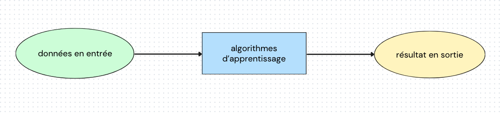